pacman::p_load(tidyverse, ggdist, ggridges, patchwork, scales, corrplot, rstatix, gganimate, gifski)Take-Home Exercise 1
Introduction
Background
Insurers often manage portfolios whereby the cause of poor profitability and high volatility are not immediately clear. These outcomes may be influenced by a combination of customer profiles, policy, characteristics, claim patterns and it changes over time. This study uses a real-world open-access motor vehicle insurance portfolio dataset and visual analytics libraries in R to explore numerical, categorical, and temporal variables, with the aim of identifying key factors influencing portfolio profitability and volatility.
The Data
This study uses a real-world motor vehicle insurance portfolio dataset obtained from a Spanish insurance company that specialises in non-life insurance. The dataset, together with its accompanying cookbook, is publicly available through Mendeley Data.
Objectives
The objectives of this study are:
- To apply suitable univariate visual analytics techniques to explore the distributions and characteristics of key numerical and categorical variables in the insurance portfolio dataset.
- To apply suitable bivariate visual analytics techniques to investigate relationships between variables and statistically validate factors influencing the profitability and volatility of the insurance portfolio.
Getting started
Loading packages
Begin by loading the following R packages using the p_load() function in the pacman package.
| Package | Description |
|---|---|
| tidyverse | Collection of R packages commonly used for data importing, wrangling, transformation and visualisation. Includes ggplot2, dplyr, tidyr and other core packages. |
| ggdist | Used to create distribution-based charts such as half-eye plots, which help show spread, skewness and central tendency |
| ggridges | Creates ridgeline plots to compare numerical distributions across categories |
| patchwork | Used to combine multiple ggplot charts into one composite figure, such as placing a boxplot above a histogram |
| scales | Used to format chart labels, such as adding commas to large numbers or displaying percentages |
| corrplot | Used to create correlation matrix visualisations |
| rstatix | Used to run statistical validation tests such as correlation tests, Kruskal-Wallis tests, Wilcoxon tests and chi-square tests |
| gganimate | Used to create animated ggplot visualisations, allowing temporal trends to be displayed as frame-by-frame animations |
| gifski | Used to render animations as GIF files, working in conjunction with gganimate to produce animated graphics |
Data importing
The motor insurance portfolio data is imported into R using read_delim() function of readr package. read_delim() is used because the data file is semi-colon separated
motor_insurance <- read_delim("data/Dataset of motor insurance portfolio.csv", delim = ";", show_col_types = FALSE)Glimpse Data
Use the glimpse() function to get a quick overview of the data.
glimpse(motor_insurance)Rows: 354,140
Columns: 47
$ insured_id <dbl> 1, 2, 2, 2, 3, 3, 3, 4, 4, 4, 5, 5, 5, 6, …
$ year <dbl> 2022, 2022, 2023, 2024, 2022, 2023, 2024, …
$ policy_type <chr> "COMP_E", "COMP_E", "COMP_E", "COMP_E", "C…
$ policy_status <chr> "C", "A", "A", "A", "A", "A", "A", "A", "A…
$ business_type <chr> "NB", "P", "P", "P", "NB", "P", "P", "NB",…
$ payment_frequency <chr> "A", "A", "A", "A", "S", "S", "S", "A", "A…
$ bonus_score <chr> "G", "G", "G", "G", "G", "G", "G", "G", "G…
$ driver_age <dbl> 48, 43, 44, 45, 45, 46, 47, 32, 33, 34, 39…
$ vehicle_age <dbl> 22, 24, 25, 26, 26, 27, 28, 12, 13, 14, 20…
$ age_driving_licence <dbl> 26, 19, 19, 18, 19, 19, 19, 19, 19, 19, 19…
$ fuel_type <chr> "G", "D", "D", "D", "D", "D", "D", "D", "D…
$ vehicle_value <dbl> 149511.44, 65065.12, 65065.12, 65065.12, 5…
$ seats <dbl> 4, 8, 8, 8, 7, 7, 7, 5, 5, 5, 5, 5, 5, 5, …
$ power_to_weight_ratio <dbl> 3.92, 10.15, 10.15, 10.15, 9.19, 9.19, 9.1…
$ vehicle_brand <chr> "PORSCHE", "MERCEDES", "MERCEDES", "MERCED…
$ municipality_type <chr> "I", "I", "I", "I", "I", "I", "I", "I", "I…
$ circulation_area <chr> "U", "U", "U", "U", "R", "R", "R", "R", "R…
$ total_premium <dbl> 279.5576, 546.6234, 548.7526, 584.6324, 68…
$ liability_premium <dbl> 30.60232, 114.33336, 110.66689, 122.09253,…
$ property_damage_premium <dbl> 121.9127, 303.1060, 304.9560, 305.2251, 35…
$ theft_premium <dbl> 112.361489, 80.784824, 83.521384, 107.8868…
$ fire_premium <dbl> 3.832441, 7.826861, 6.151465, 5.842892, 7.…
$ glass_premium <dbl> 8.305788, 30.091751, 32.861626, 31.101584,…
$ legal_protection_premium <dbl> 2.043622, 7.812747, 7.655637, 10.084173, 6…
$ occupants_premium <dbl> 0.4992053, 2.6679084, 2.9395659, 2.3992827…
$ total_claims <dbl> 0, 0, 1, 2, 0, 0, 0, 0, 0, 0, 0, 0, 0, 5, …
$ liability_claims <dbl> 0, 0, 1, 1, 0, 0, 0, 0, 0, 0, 0, 0, 0, 0, …
$ liability_property_claims <dbl> 0, 0, 1, 1, 0, 0, 0, 0, 0, 0, 0, 0, 0, 0, …
$ liability_injury_claims <dbl> 0, 0, 0, 0, 0, 0, 0, 0, 0, 0, 0, 0, 0, 0, …
$ property_claims <dbl> 0, 0, 0, 1, 0, 0, 0, 0, 0, 0, 0, 0, 0, 5, …
$ theft_claims <dbl> 0, 0, 0, 0, 0, 0, 0, 0, 0, 0, 0, 0, 0, 0, …
$ fire_claims <dbl> 0, 0, 0, 0, 0, 0, 0, 0, 0, 0, 0, 0, 0, 0, …
$ glass_claims <dbl> 0, 0, 0, 0, 0, 0, 0, 0, 0, 0, 0, 0, 0, 0, …
$ legal_protection_claims <dbl> 0, 0, 0, 0, 0, 0, 0, 0, 0, 0, 0, 0, 0, 0, …
$ occupants_claims <dbl> 0, 0, 0, 0, 0, 0, 0, 0, 0, 0, 0, 0, 0, 0, …
$ total_incurred <dbl> 0.000, 0.000, 233.013, 2586.361, 0.000, 0.…
$ liability_incurred <dbl> 0.000, 0.000, 233.013, 1035.000, 0.000, 0.…
$ liability_property_incurred <dbl> 0.000, 0.000, 233.013, 1035.000, 0.000, 0.…
$ liability_injury_incurred <dbl> 0.000, 0.000, 0.000, 0.000, 0.000, 0.000, …
$ property_incurred <dbl> 0.000, 0.000, 0.000, 1551.361, 0.000, 0.00…
$ theft_incurred <dbl> 0, 0, 0, 0, 0, 0, 0, 0, 0, 0, 0, 0, 0, 0, …
$ fire_incurred <dbl> 0, 0, 0, 0, 0, 0, 0, 0, 0, 0, 0, 0, 0, 0, …
$ glass_incurred <dbl> 0, 0, 0, 0, 0, 0, 0, 0, 0, 0, 0, 0, 0, 0, …
$ legal_protection_incurred <dbl> 0, 0, 0, 0, 0, 0, 0, 0, 0, 0, 0, 0, 0, 0, …
$ occupants_incurred <dbl> 0, 0, 0, 0, 0, 0, 0, 0, 0, 0, 0, 0, 0, 0, …
$ total_exposure <dbl> 0.09863014, 1.00000000, 1.00000000, 1.0000…
$ liability_exposure <dbl> 0.09863014, 1.00000000, 1.00000000, 1.0000…
NoteInsights
The raw dataset has 354,140 rows and many policy, vehicle, premium, claim and exposure variables.
Data Wrangling
1. Check for duplicates
No record found for duplicated rows
sum(duplicated(motor_insurance))[1] 0No records found for duplicated policy-year records.
motor_insurance %>%
count(insured_id, year) %>%
filter(n > 1)# A tibble: 0 × 3
# ℹ 3 variables: insured_id <dbl>, year <dbl>, n <int>2. Check for missing values by column
motor_insurance %>%
summarise(across(everything(), ~ sum(is.na(.)))) %>%
pivot_longer(
cols = everything(),
names_to = "variable",
values_to = "missing_count"
) %>%
filter(missing_count > 0) %>%
arrange(desc(missing_count))# A tibble: 4 × 2
variable missing_count
<chr> <int>
1 fuel_type 1287
2 vehicle_value 513
3 vehicle_age 2
4 age_driving_licence 2The largest missing column is fuel_type with 1,287 missing rows followed by vehicle_value, vehicle_age and age_driving_licence. We will first do variable selection then drop the rows with missing values.
3. Variable Selection
The original dataset contains 42 columns covering policy details, driver and vehicle characteristics, premium components, claim counts, incurred losses, and exposure. To keep the visual analysis focused, only variables that are relevant to overall portfolio profitability, volatility and potential loss drivers are retained.
Detailed coverage-level premium, claim, and incurred loss variables were excluded from the main analysis because the focus is on overall portfolio-level profitability and volatility.
| Variables | Retain Reason |
|---|---|
| year | Retained as temporal variable to examine changes across years |
| policy_status | To compare active and cancelled policies |
| policy_type | Different coverage may have different premium and claim behavior |
| business_type | To compare new and existing portfolio policies |
| bonus_score | Reflect policyholder’s past claims experience and may influence future claim risk |
| driver_age | Key driver characteristics that may affect claim frequency and risk behavior |
| vehicle_age | Older vehicle may have different claim patterns, repair needs or loss severity |
| age_driving_licence | Kept to derive driving_experience which is more meaningful for analysis |
| fuel_type | To explore whether diesel and gasoline vehicles show different claim/profitability patterns |
| vehicle_value | Vehicle value can influence claim severity and potential incurred losses |
| vehicle_brand | For segment-level analysis, compare top vehicle brands by loss ratio or claim frequency |
| circulation_area | To compare urban and rural driving environments which may influence claim exposure and frequency |
| municipality_type | Retained as geographic indicator to examine whether different areas diff in risk and profitability |
| total_premium | For measuring revenue and deriving loss ratio and underwriting profit |
| total_claims | For measuring claim frequency and portfolio volatility |
| total_incurred | For measuring total claim cost and portfolio volatility |
| total_exposure | For normalising claims by time-on-risk to allow fair comparison across policies |
motor_insurance_selected <- motor_insurance %>%
select(
year,
policy_status,
policy_type,
business_type,
bonus_score,
driver_age,
vehicle_age,
age_driving_licence,
fuel_type,
vehicle_value,
vehicle_brand,
circulation_area,
municipality_type,
total_premium,
total_claims,
total_incurred,
total_exposure
)4. Dropping rows with missing value
Since the overall number of affected rows is small relative to the dataset size, rows with missing values were removed for completeness before visual analysis.
motor_insurance_clean <- motor_insurance_selected %>%
drop_na()nrow(motor_insurance) - nrow(motor_insurance_clean)[1] 1802After applying drop_na(), a total of 1,802 rows were removed. 1,802 / 354,140 = 0.51% which is considered as not significant
5. Variable Transformation
i. Creating a new variable from existing variables
After variable selection, new analytical variables were derived to investigate the portfolio’s profitability and volatility. driving_experience was created by subtracting age_driving_licence from driver_age to approximate the number of years the driver has held a licence.
Several profitability-related measures were also derived including: - loss_ratio (total_incurred/total_premium): Measures claims incurred relative to premium collected. Used as a profitability indicator - underwriting_profit (total_premium - total_incurred): Measures simplified underwriting profit before expenses, commissions, reinsurance, and investment income - claim_frequency (total_claims/total_exposure): Measures how often claims occur after adjusting for time-on-risk. Used to assess claim activity and volatility - claim_severity (total_incurred/total_claims): Measures the average incurred cost per claim. Used to assess the size or severity of claims.
These variables are created in accordance with actuarial/industry standards
motor_insurance_final <- motor_insurance_clean %>%
mutate(
driving_experience = driver_age - age_driving_licence,
loss_ratio = total_incurred / total_premium,
claim_frequency = total_claims / total_exposure,
claim_severity = if_else(total_claims > 0, total_incurred / total_claims, NA_real_),
underwriting_profit = total_premium - total_incurred
) %>%
select(-age_driving_licence)ii. Changing data type
After deriving the new variables, the data types were reviewed to ensure that each variable is treated appropriately for visual analysis. Variables such as policy_status, policy_type, business_type, bonus_score, fuel_type, vehicle_brand, circulation_area, and municipality_type were converted from character variables into factors because they represent categorical groups rather than continuous values.
Numerical variables such as driver_age, vehicle_age, vehicle_value, total_premium, total_claims, total_incurred, total_exposure, loss_ratio, claim_frequency, claim_severity, and underwriting_profit were kept as numeric variables for distribution analysis, correlation analysis, and bivariate visualisation.
motor_insurance_final <- motor_insurance_final %>%
mutate(
policy_status = as.factor(policy_status),
policy_type = as.factor(policy_type),
business_type = as.factor(business_type),
bonus_score = as.factor(bonus_score),
fuel_type = as.factor(fuel_type),
vehicle_brand = as.factor(vehicle_brand),
circulation_area = as.factor(circulation_area),
municipality_type = as.factor(municipality_type)
)iii. Recoding categorical variables
Some categorical variables were originally coded using short labels. These were recoded into more descriptive labels to improve the readability of the visualisations.
motor_insurance_final <- motor_insurance_final %>%
mutate(
policy_status = recode(policy_status,
"A" = "Active",
"C" = "Cancelled"),
business_type = recode(business_type,
"NB" = "New Business",
"P" = "Portfolio"),
bonus_score = recode(bonus_score,
"G" = "Good",
"N" = "Neutral",
"B" = "Bad"),
fuel_type = recode(fuel_type,
"D" = "Diesel",
"G" = "Gasoline"),
circulation_area = recode(circulation_area,
"U" = "Urban",
"R" = "Rural"),
municipality_type = recode(municipality_type,
"I" = "Inland",
"C" = "Coastal",
"IS" = "Islands")
)6. Final Variables Selected for Visual Analysis
| Analysis Area | Variables Used |
|---|---|
| Policy/Policyholder profile | year, policy_status, policy_type, business_type, bonus_score, driver_age, age_driving_licence |
| Vehicle profile | vehicle_age, fuel_type, vehicle_value, vehicle_brand |
| Geographic / driving environment | circulation_area, municipality_type |
| Premium and exposure | total_premium, total_exposure |
| Claims and incurred losses | total_claims, total_incurred |
| Derived profitability variables | loss_ratio, underwriting_profit |
| Derived volatility variables | claim_frequency, claim_severity |
| Derived driver variable | driving_experience |
Univariate Visual Analytics
Not all retained variables were visualised individually in the univariate analysis. Some variables were retained because they were required to derive analytical measures such as loss_ratio, `claim_frequency, claim_severity, and underwriting_profit, while others were kept as supporting variables for bivariate analysis. The univariate analysis focuses on variables most relevant to portfolio composition, driver and vehicle profile, profitability, and claim volatility
1. Policy/Policyholder profile
1.1 Policy Type
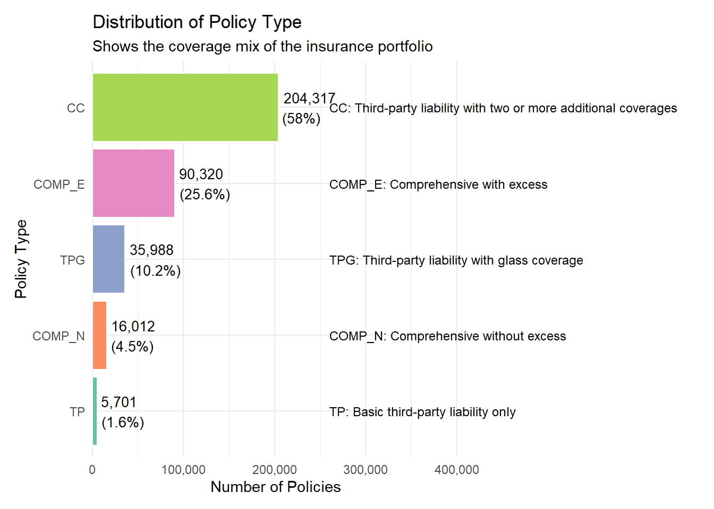
# Main count table
policy_type_summary <- motor_insurance_final %>%
count(policy_type) %>%
mutate(
percentage = n / sum(n) * 100,
label = paste0(scales::comma(n), "\n(", round(percentage, 1), "%)")
)
# Reorder factor levels for plotting
policy_type_summary <- policy_type_summary %>%
mutate(
policy_type = factor(
policy_type,
levels = c("TP", "COMP_N", "TPG", "COMP_E", "CC")
)
)
# Description table for annotation on the right
policy_desc <- tibble(
policy_type = factor(
c("CC", "COMP_E", "TPG", "COMP_N", "TP"),
levels = levels(policy_type_summary$policy_type)
),
desc = c(
"CC: Third-party liability with two or more additional coverages",
"COMP_E: Comprehensive with excess",
"TPG: Third-party liability with glass coverage",
"COMP_N: Comprehensive without excess",
"TP: Basic third-party liability only"
),
xpos = c(260000, 260000, 260000, 260000, 260000)
)
ggplot(policy_type_summary, aes(x = policy_type, y = n, fill = policy_type)) +
geom_col(colour = "white") +
geom_text(
aes(label = label),
hjust = -0.1,
size = 3.5
) +
geom_text(
data = policy_desc,
aes(x = policy_type, y = xpos, label = desc),
inherit.aes = FALSE,
hjust = 0,
size = 3.2,
colour = "black"
) +
coord_flip(clip = "off") +
scale_y_continuous(
labels = scales::comma,
expand = expansion(mult = c(0, 0.55))
) +
scale_fill_brewer(palette = "Set2") +
labs(
title = "Distribution of Policy Type",
subtitle = "Shows the coverage mix of the insurance portfolio",
x = "Policy Type",
y = "Number of Policies"
) +
theme_minimal() +
theme(
legend.position = "none",
plot.margin = margin(t = 10, r = 180, b = 10, l = 10)
)
NoteInsights
The portfolio is dominated by CC policies. CC accounts for 204,317 policies (58.0%) of the portfolio.
Most policies include third-party liability with two or more additional coverages.
COMP_E is the second largest group with 90,320 policies (25.6%).
TPG accounts for 35,988 policies (10.2%).
COMP_N and TP make up much smaller shares at 4.5% and 1.6% respectively.
Overall, portfolio is more concentrated in broader coverage types rather than basic third-party-only policies.
1.2 Bonus Score
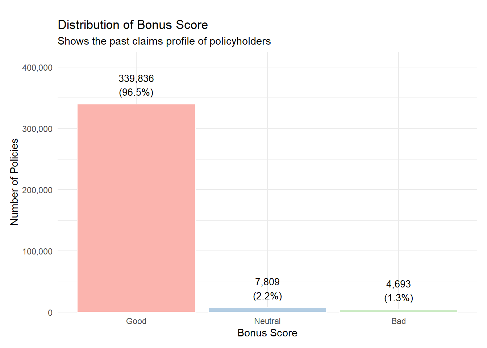
motor_insurance_final %>%
filter(!is.na(bonus_score)) %>%
count(bonus_score) %>%
mutate(
percentage = n / sum(n) * 100,
bonus_score = factor(
bonus_score,
levels = c("Good", "Neutral", "Bad")
),
label = paste0(scales::comma(n), "\n(", round(percentage, 1), "%)")
) %>%
ggplot(aes(x = bonus_score, y = n, fill = bonus_score)) +
geom_col(colour = "white") +
geom_text(
aes(label = label),
vjust = -0.4,
size = 3.5
) +
scale_y_continuous(
labels = scales::comma,
expand = expansion(mult = c(0, 0.25))
) +
scale_fill_brewer(palette = "Pastel1") +
labs(
title = "Distribution of Bonus Score",
subtitle = "Shows the past claims profile of policyholders",
x = "Bonus Score",
y = "Number of Policies"
) +
theme_minimal() +
theme(
legend.position = "none",
plot.margin = margin(t = 20, r = 10, b = 10, l = 10)
)
NoteInsights
- The portfolio is heavily dominated by policyholders with a Good bonus score.
- Good bonus score accounts for 339,836 policies (96.5%).
- This suggests that most policyholders have a favourable past claims history.
- Neutral and Bad bonus score accounts for 7,809 policies (2.2%) and 4,693 policies (1.3%) respectively
- Although the Neutral and Bad groups are small, they can still be explored further in bivariate analysis to see whether they are linked to higher
claim_frequencyor poorerloss_ratio.
1.3 Driver Age
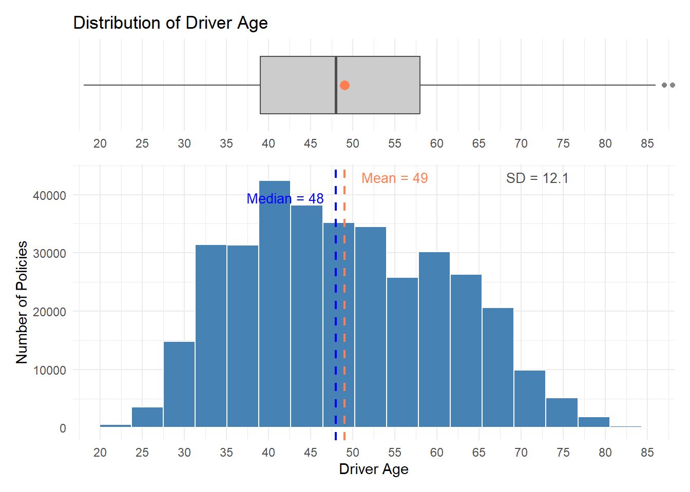
# Summary statistics
mean_age <- round(mean(motor_insurance_final$driver_age, na.rm = TRUE), 0)
median_age <- round(median(motor_insurance_final$driver_age, na.rm = TRUE), 0)
sd_age <- round(sd(motor_insurance_final$driver_age, na.rm = TRUE), 1)
# Boxplot
driver_age_box <- ggplot(motor_insurance_final, aes(x = driver_age, y = "")) +
geom_boxplot(
fill = "grey80",
colour = "grey30",
outlier.colour = "grey50",
outlier.alpha = 0.4
) +
stat_summary(
fun = mean,
geom = "point",
colour = "coral",
size = 3
) +
scale_x_continuous(
breaks = seq(20, 85, by = 5)
) +
coord_cartesian(xlim = c(20, 85)) +
labs(
title = "Distribution of Driver Age",
x = NULL,
y = NULL
) +
theme_minimal() +
theme(
axis.text.y = element_blank(),
axis.ticks.y = element_blank(),
panel.grid.major.y = element_blank()
)
# Histogram
driver_age_hist <- ggplot(motor_insurance_final, aes(x = driver_age)) +
geom_histogram(
bins = 20,
fill = "steelblue",
colour = "white"
) +
geom_vline(
xintercept = mean_age,
colour = "coral",
linetype = "dashed",
linewidth = 0.8
) +
geom_vline(
xintercept = median_age,
colour = "blue",
linetype = "dashed",
linewidth = 0.8
) +
annotate(
"text",
x = median_age - 6,
y = 39500,
label = paste0("Median = ", median_age),
colour = "blue",
size = 3.5
) +
annotate(
"text",
x = mean_age + 6,
y = 43000,
label = paste0("Mean = ", mean_age),
colour = "coral",
size = 3.5
) +
annotate(
"text",
x = 72,
y = 43000,
label = paste0("SD = ", sd_age),
colour = "grey30",
size = 3.5
) +
scale_x_continuous(
breaks = seq(20, 85, by = 5)
) +
coord_cartesian(xlim = c(20, 85)) +
labs(
x = "Driver Age",
y = "Number of Policies"
) +
theme_minimal()
# Combine boxplot and histogram
driver_age_box / driver_age_hist +
plot_layout(heights = c(1, 3))
NoteInsights
Most insured drivers are concentrated between 35 and 65 years old, with the highest number of policies around the 40 to 45 age range.
This suggests that the portfolio is mainly made up of middle-aged drivers, while very young and very old drivers form a smaller share.
The distribution is slightly right-skewed, with policy counts gradually declining as driver age increases beyond the mid-40s.
2. Vehicle Profile
2.1 Vehicle Value
We can see from the initial boxplot distribution that vehicle value is highly right-skewed, with most insured vehicles concentrated at lower values and a small number of very high-value vehicles appearing as outliers. This suggests that the portfolio mainly consists of lower to mid-value vehicles, while a smaller group of luxury or high-value vehicles may have greater potential claim severity.
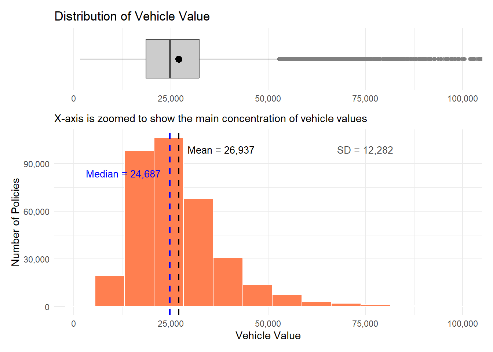
# Summary statistics
mean_vehicle_value <- round(mean(motor_insurance_final$vehicle_value, na.rm = TRUE), 0)
median_vehicle_value <- round(median(motor_insurance_final$vehicle_value, na.rm = TRUE), 0)
sd_vehicle_value <- round(sd(motor_insurance_final$vehicle_value, na.rm = TRUE), 0)
# Boxplot
vehicle_value_box <- ggplot(motor_insurance_final, aes(x = vehicle_value, y = "")) +
geom_boxplot(
fill = "grey80",
colour = "grey30",
outlier.colour = "grey50",
outlier.alpha = 0.35
) +
stat_summary(
fun = mean,
geom = "point",
colour = "black",
size = 3
) +
coord_cartesian(xlim = c(0, 100000)) +
scale_x_continuous(
labels = scales::comma,
breaks = seq(0, 100000, by = 25000)
) +
labs(
title = "Distribution of Vehicle Value",
x = NULL,
y = NULL
) +
theme_minimal() +
theme(
axis.text.y = element_blank(),
axis.ticks.y = element_blank(),
panel.grid.major.y = element_blank()
)
# Histogram
vehicle_value_hist <- ggplot(motor_insurance_final, aes(x = vehicle_value)) +
geom_histogram(
bins = 50,
fill = "coral",
colour = "white"
) +
geom_vline(
xintercept = median_vehicle_value,
colour = "blue",
linetype = "dashed",
linewidth = 0.8
) +
geom_vline(
xintercept = mean_vehicle_value,
colour = "black",
linetype = "dashed",
linewidth = 0.8
) +
annotate(
"text",
x = median_vehicle_value - 12000,
y = 84000,
label = paste0("Median = ", scales::comma(median_vehicle_value)),
colour = "blue",
size = 3.5
) +
annotate(
"text",
x = mean_vehicle_value + 11000,
y = 99000,
label = paste0("Mean = ", scales::comma(mean_vehicle_value)),
colour = "black",
size = 3.5
) +
annotate(
"text",
x = 75000,
y = 99000,
label = paste0("SD = ", scales::comma(sd_vehicle_value)),
colour = "grey30",
size = 3.5
) +
coord_cartesian(xlim = c(0, 100000)) +
scale_x_continuous(
labels = scales::comma,
breaks = seq(0, 100000, by = 25000)
) +
scale_y_continuous(labels = scales::comma) +
labs(
subtitle = "X-axis is zoomed to show the main concentration of vehicle values",
x = "Vehicle Value",
y = "Number of Policies"
) +
theme_minimal()
# Combine boxplot and histogram
vehicle_value_box / vehicle_value_hist +
plot_layout(heights = c(1, 3))
NoteInsights
- Vehicle value is right-skewed, with most insured vehicles concentrated in the lower to mid-value range.
- The median vehicle value is 24,687, while the mean is higher at 26,937, suggesting that high-value vehicles pull the average upward.
- Most policies are clustered below around 35,000, but the boxplot shows several high-value outliers, which may be linked to greater potential claim severity.
2.2 Vehicle Age
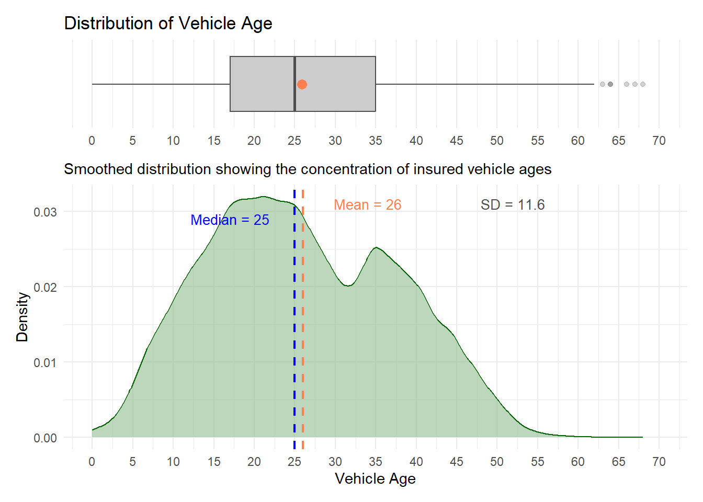
# Summary statistics
mean_vehicle_age <- round(mean(motor_insurance_final$vehicle_age, na.rm = TRUE), 0)
median_vehicle_age <- round(median(motor_insurance_final$vehicle_age, na.rm = TRUE), 0)
sd_vehicle_age <- round(sd(motor_insurance_final$vehicle_age, na.rm = TRUE), 1)
# Boxplot
vehicle_age_box <- ggplot(motor_insurance_final, aes(x = vehicle_age, y = "")) +
geom_boxplot(
fill = "grey80",
colour = "grey30",
outlier.colour = "grey50",
outlier.alpha = 0.35
) +
stat_summary(
fun = mean,
geom = "point",
colour = "coral",
size = 3
) +
scale_x_continuous(
breaks = seq(0, 70, by = 5)
) +
coord_cartesian(xlim = c(0, 70)) +
labs(
title = "Distribution of Vehicle Age",
x = NULL,
y = NULL
) +
theme_minimal() +
theme(
axis.text.y = element_blank(),
axis.ticks.y = element_blank(),
panel.grid.major.y = element_blank()
)
# Density plot
vehicle_age_density <- ggplot(motor_insurance_final, aes(x = vehicle_age)) +
geom_density(
fill = "darkseagreen",
alpha = 0.6,
colour = "darkgreen"
) +
geom_vline(
xintercept = median_vehicle_age,
colour = "blue",
linetype = "dashed",
linewidth = 0.8
) +
geom_vline(
xintercept = mean_vehicle_age,
colour = "coral",
linetype = "dashed",
linewidth = 0.8
) +
annotate(
"text",
x = median_vehicle_age - 8,
y = 0.029,
label = paste0("Median = ", median_vehicle_age),
colour = "blue",
size = 3.5
) +
annotate(
"text",
x = mean_vehicle_age + 8,
y = 0.031,
label = paste0("Mean = ", mean_vehicle_age),
colour = "coral",
size = 3.5
) +
annotate(
"text",
x = 52,
y = 0.031,
label = paste0("SD = ", sd_vehicle_age),
colour = "grey30",
size = 3.5
) +
scale_x_continuous(
breaks = seq(0, 70, by = 5)
) +
coord_cartesian(xlim = c(0, 70)) +
labs(
subtitle = "Smoothed distribution showing the concentration of insured vehicle ages",
x = "Vehicle Age",
y = "Density"
) +
theme_minimal()
# Combine boxplot and density plot
vehicle_age_box / vehicle_age_density +
plot_layout(heights = c(1, 3))
NoteInsights
- Vehicle age is mainly concentrated around 15 to 35 years, suggesting that the portfolio mostly contains mature vehicles rather than very new vehicles.
- The median vehicle age is 25 and the mean is 26, so the distribution is fairly balanced with only slight right-skewness.
- There is a smaller second peak around 35 to 40 years, indicating another group of older insured vehicles.
- The boxplot shows a few older vehicle outliers above 60 years, but these make up only a small portion of the portfolio.
2.3 Vehicle Brand
Vehicle brand is visualised using a bar chart of the top 10 brands by policy count. Since there may be many vehicle brands, only the most common brands are shown individually, while the remaining brands are grouped under Others to keep the chart readable.
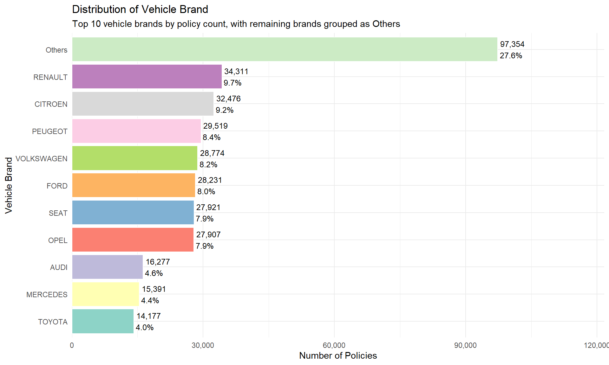
# Identify top 10 vehicle brands by policy count
top_vehicle_brands <- motor_insurance_final %>%
filter(!is.na(vehicle_brand)) %>%
count(vehicle_brand, sort = TRUE) %>%
slice_head(n = 10) %>%
pull(vehicle_brand)
# Prepare vehicle brand summary
vehicle_brand_summary <- motor_insurance_final %>%
filter(!is.na(vehicle_brand)) %>%
mutate(
vehicle_brand_grouped = if_else(
vehicle_brand %in% top_vehicle_brands,
as.character(vehicle_brand),
"Others"
)
) %>%
count(vehicle_brand_grouped, name = "n") %>%
mutate(
percentage = n / sum(n),
label = paste0(scales::comma(n), "\n", scales::percent(percentage, accuracy = 0.1)),
vehicle_brand_grouped = fct_reorder(vehicle_brand_grouped, n)
)
# Plot
vehicle_brand_summary %>%
ggplot(aes(
x = vehicle_brand_grouped,
y = n,
fill = vehicle_brand_grouped
)) +
geom_col(colour = "white") +
geom_text(
aes(label = label),
hjust = -0.1,
size = 3.3
) +
coord_flip() +
scale_y_continuous(
labels = scales::comma,
expand = expansion(mult = c(0, 0.25))
) +
scale_fill_brewer(palette = "Set3") +
labs(
title = "Distribution of Vehicle Brand",
subtitle = "Top 10 vehicle brands by policy count, with remaining brands grouped as Others",
x = "Vehicle Brand",
y = "Number of Policies"
) +
theme_minimal() +
theme(
legend.position = "none"
)
NoteInsights
Vehicle brand is relatively diverse, with the Others group forming the largest share at 27.6% meaning many smaller brands exist outside the top 10
Among individual brands, Renault has the highest policy count at 34,311 policies (9.7%), followed by Citroen at 32,476 policies (9.2%) and Peugeot at 29,519 policies (8.4%)
Since no single vehicle brand dominates the portfolio, vehicle brand may be more useful for grouped or top-brand bivariate analysis rather than analysing every brand individually
3. Geographic/Driving Environment
3.1 Circulation Area
A donut chart was used for circulation_area because it is a binary categorical variable with only two groups, making it easy to compare the portfolio share of urban and rural policies.
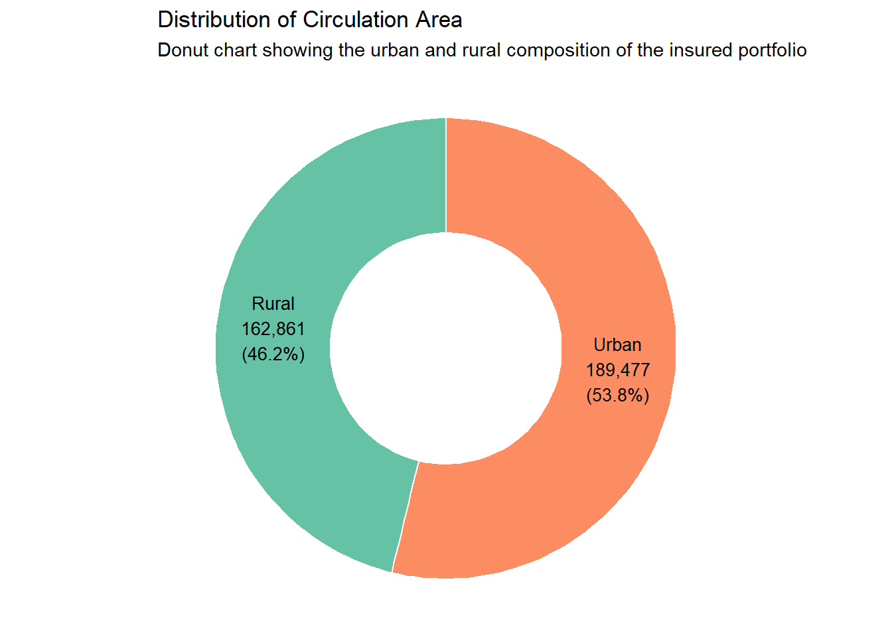
circulation_summary <- motor_insurance_final %>%
filter(!is.na(circulation_area)) %>%
count(circulation_area) %>%
mutate(
percentage = n / sum(n) * 100,
label = paste0(circulation_area, "\n", scales::comma(n), "\n(", round(percentage, 1), "%)")
)
ggplot(circulation_summary, aes(x = 2, y = n, fill = circulation_area)) +
geom_col(width = 1, colour = "white") +
coord_polar(theta = "y") +
xlim(0.5, 2.5) +
geom_text(
aes(label = label),
position = position_stack(vjust = 0.5),
size = 3.5
) +
scale_fill_brewer(palette = "Set2") +
labs(
title = "Distribution of Circulation Area",
subtitle = "Donut chart showing the urban and rural composition of the insured portfolio",
fill = "Circulation Area"
) +
theme_void() +
theme(
plot.title = element_text(hjust = 0),
plot.subtitle = element_text(hjust = 0),
legend.position = "none"
)
NoteInsights
The portfolio is fairly balanced between Urban and Rural circulation areas.
Urban policies form a slightly larger share at 189,477 policies (53.8%).
Rural policies account for 162,861 policies (46.2%).
Insurer has exposure across both driving environments.
Since urban areas may have higher traffic density, this variable can be explored further in bivariate analysis with
claim_frequency,claim_severity, orloss_ratio.
4. Derived profitability variables
4.1 Loss Ratio and Loss Ratio Group
The histogram shows that loss_ratio is highly concentrated near zero, mainly because many policies have no incurred claims. There are also a small number of extreme high loss ratio values, where incurred claims are much larger than premiums. This makes the raw numerical distribution difficult to interpret using a standard histogram.
loss_ratio_data <- motor_insurance_final %>%
filter(is.finite(loss_ratio))
ggplot(loss_ratio_data, aes(x = loss_ratio)) +
geom_histogram(
binwidth = 0.1,
fill = "mediumpurple",
colour = "white"
) +
coord_cartesian(xlim = c(0, 5)) +
scale_x_continuous(
breaks = seq(0, 5, by = 0.5)
) +
scale_y_continuous(labels = scales::comma) +
labs(
title = "Distribution of Loss Ratio",
x = "Loss Ratio",
y = "Number of Policies"
) +
theme_minimal()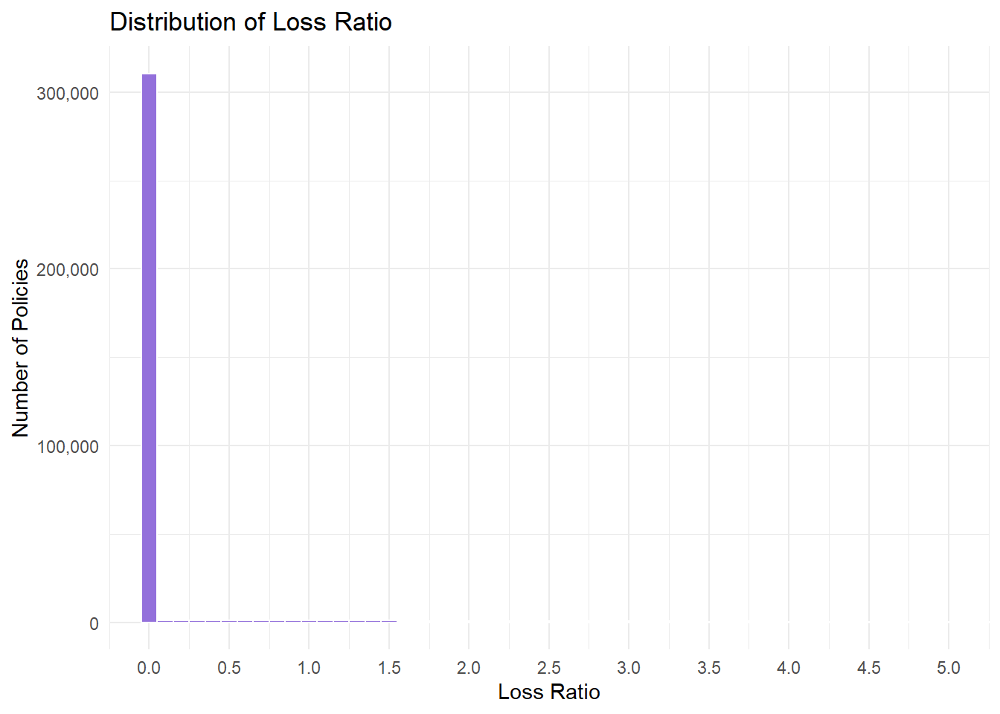
Data transformation is performed to change loss ratio into categorical variable
motor_insurance_final <- motor_insurance_final %>%
mutate(
loss_ratio_group = case_when(
loss_ratio == 0 ~ "No Loss",
loss_ratio > 0 & loss_ratio <= 1 ~ "Profitable / Acceptable",
loss_ratio > 1 ~ "Loss-making"
)
)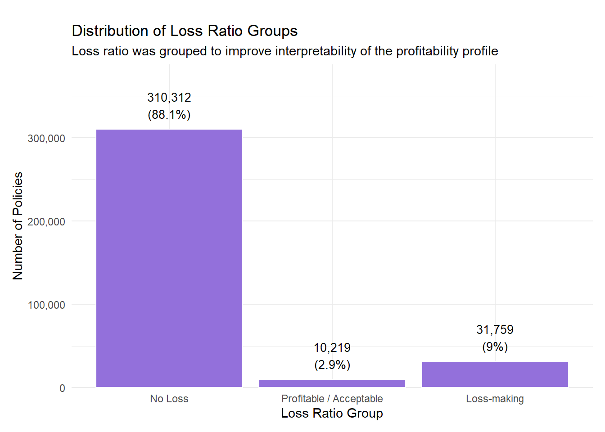
motor_insurance_final %>%
filter(!is.na(loss_ratio_group)) %>%
count(loss_ratio_group) %>%
mutate(
percentage = n / sum(n) * 100,
loss_ratio_group = factor(
loss_ratio_group,
levels = c("No Loss", "Profitable / Acceptable", "Loss-making")
),
label = paste0(scales::comma(n), "\n(", round(percentage, 1), "%)")
) %>%
ggplot(aes(x = loss_ratio_group, y = n)) +
geom_col(fill = "mediumpurple", colour = "white") +
geom_text(
aes(label = label),
vjust = -0.4,
size = 3.5
) +
scale_y_continuous(
labels = scales::comma,
expand = expansion(mult = c(0, 0.25))
) +
coord_cartesian(clip = "off") +
labs(
title = "Distribution of Loss Ratio Groups",
subtitle = "Loss ratio was grouped to improve interpretability of the profitability profile",
x = "Loss Ratio Group",
y = "Number of Policies"
) +
theme_minimal() +
theme(
plot.margin = margin(t = 20, r = 10, b = 10, l = 10)
)
NoteInsights
Most policies fall under the No Loss group, meaning they did not record any incurred claims during the exposure period.
This is expected in insurance portfolios, where many policyholders do not make claims within a given year.
A smaller proportion falls under Profitable / Acceptable, where incurred claims are positive but do not exceed premium collected.
The Loss-making group is smaller but important, as these policies have incurred claims greater than premium and may drive profitability pressure in the portfolio.
5. Derived volatility variables
5.1 Claims Frequency and Claim Frequency Group
claim_frequency is also zero-heavy as shown in the histogram below, because most policies have no claims
claim_frequency_data <- motor_insurance_final %>%
filter(is.finite(claim_frequency))
ggplot(claim_frequency_data, aes(x = claim_frequency)) +
geom_histogram(
binwidth = 0.1,
fill = "darkorange",
colour = "white"
) +
coord_cartesian(xlim = c(0, 5)) +
scale_x_continuous(
breaks = seq(0, 5, by = 0.5)
) +
scale_y_continuous(labels = scales::comma) +
labs(
title = "Distribution of Claim Frequency",
subtitle = "Displayed range is limited to 0–5 to show the main concentration of values",
x = "Claim Frequency",
y = "Number of Policies"
) +
theme_minimal()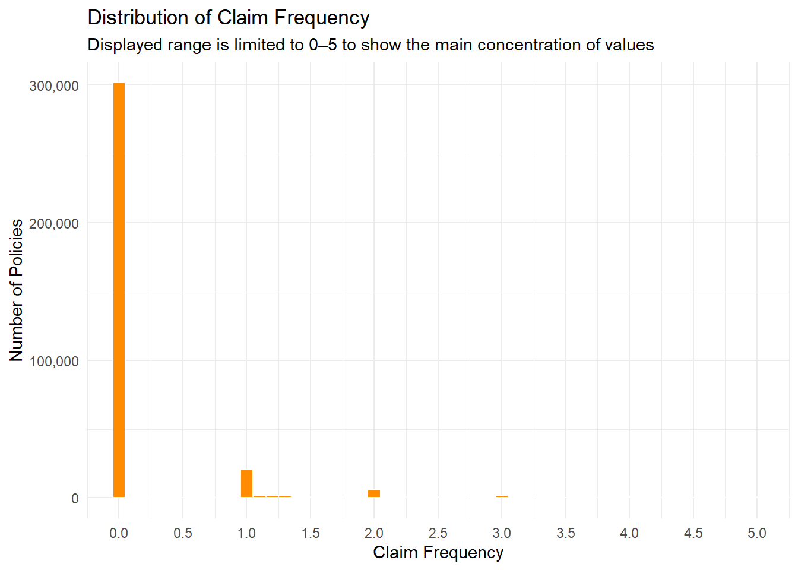
We will transform it into categorical variable, similar to loss ratio. No Claim: Claim frequency = 0 Low Claim Frequency: Claim frequency > 0 & <= 1 High Claim Frequency: Claim frequency > 1
motor_insurance_final <- motor_insurance_final %>%
mutate(
claim_frequency_group = case_when(
claim_frequency == 0 ~ "No Claim",
claim_frequency > 0 & claim_frequency <= 1 ~ "Low Claim Frequency",
claim_frequency > 1 ~ "High Claim Frequency"
)
)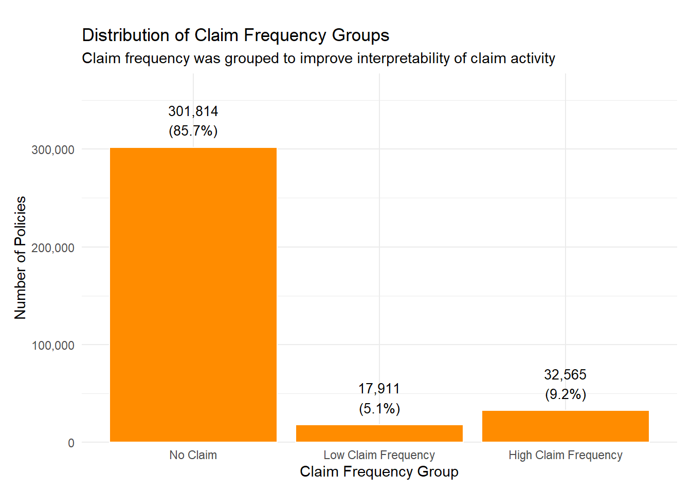
motor_insurance_final %>%
filter(!is.na(claim_frequency_group)) %>%
count(claim_frequency_group) %>%
mutate(
percentage = n / sum(n) * 100,
claim_frequency_group = factor(
claim_frequency_group,
levels = c("No Claim", "Low Claim Frequency", "High Claim Frequency")
),
label = paste0(scales::comma(n), "\n(", round(percentage, 1), "%)")
) %>%
ggplot(aes(x = claim_frequency_group, y = n)) +
geom_col(fill = "darkorange", colour = "white") +
geom_text(
aes(label = label),
vjust = -0.4,
size = 3.5
) +
scale_y_continuous(
labels = scales::comma,
expand = expansion(mult = c(0, 0.25))
) +
coord_cartesian(clip = "off") +
labs(
title = "Distribution of Claim Frequency Groups",
subtitle = "Claim frequency was grouped to improve interpretability of claim activity",
x = "Claim Frequency Group",
y = "Number of Policies"
) +
theme_minimal() +
theme(
plot.margin = margin(t = 20, r = 10, b = 10, l = 10)
)
NoteInsights
The portfolio is highly concentrated in the No Claim group, with 301,814 policies (85.7%) having no claims.
Low Claim Frequency accounts for 17,911 policies (5.1%), while High Claim Frequency accounts for 32,565 policies (9.2%).
This pattern is expected in insurance portfolios, where most policyholders do not make claims within a given year.
The High Claim Frequency group is still important as it may contribute more to portfolio volatility and should be explored further in bivariate analysis.
5.2 Claim Severity
We will only analyse claims only for claims severity because policies with no claims will have NA and claims severity is only meaningful when a claim exists
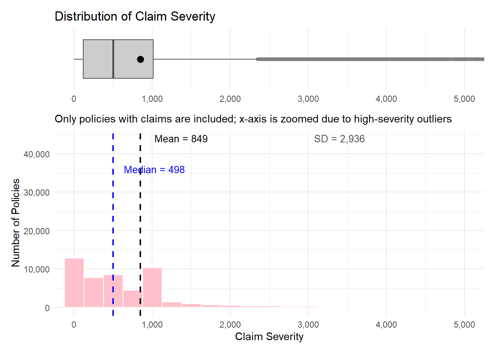
# Filter to policies with claims only
claim_severity_data <- motor_insurance_final %>%
filter(total_claims > 0, is.finite(claim_severity))
# Summary statistics
mean_claim_severity <- round(mean(claim_severity_data$claim_severity, na.rm = TRUE), 0)
median_claim_severity <- round(median(claim_severity_data$claim_severity, na.rm = TRUE), 0)
sd_claim_severity <- round(sd(claim_severity_data$claim_severity, na.rm = TRUE), 0)
# Boxplot
claim_severity_box <- ggplot(claim_severity_data, aes(x = claim_severity, y = "")) +
geom_boxplot(
fill = "grey80",
colour = "grey30",
outlier.colour = "grey50",
outlier.alpha = 0.35
) +
stat_summary(
fun = mean,
geom = "point",
colour = "black",
size = 3
) +
coord_cartesian(xlim = c(0, 5000)) +
scale_x_continuous(
labels = scales::comma,
breaks = seq(0, 5000, by = 1000)
) +
labs(
title = "Distribution of Claim Severity",
x = NULL,
y = NULL
) +
theme_minimal() +
theme(
axis.text.y = element_blank(),
axis.ticks.y = element_blank(),
panel.grid.major.y = element_blank()
)
# Histogram
claim_severity_hist <- ggplot(claim_severity_data, aes(x = claim_severity)) +
geom_histogram(
binwidth = 250,
fill = "pink",
colour = "white"
) +
geom_vline(
xintercept = median_claim_severity,
colour = "blue",
linetype = "dashed",
linewidth = 0.8
) +
geom_vline(
xintercept = mean_claim_severity,
colour = "black",
linetype = "dashed",
linewidth = 0.8
) +
annotate(
"text",
x = median_claim_severity + 140,
y = 36000,
label = paste0("Median = ", scales::comma(median_claim_severity)),
colour = "blue",
size = 3.5,
hjust = 0
) +
annotate(
"text",
x = mean_claim_severity + 180,
y = 44000,
label = paste0("Mean = ", scales::comma(mean_claim_severity)),
colour = "black",
size = 3.5,
hjust = 0
) +
annotate(
"text",
x = 3400,
y = 44000,
label = paste0("SD = ", scales::comma(sd_claim_severity)),
colour = "grey30",
size = 3.5
) +
coord_cartesian(xlim = c(0, 5000)) +
scale_x_continuous(
labels = scales::comma,
breaks = seq(0, 5000, by = 1000)
) +
scale_y_continuous(labels = scales::comma) +
labs(
subtitle = "Only policies with claims are included; x-axis is zoomed due to high-severity outliers",
x = "Claim Severity",
y = "Number of Policies"
) +
theme_minimal()
# Combine boxplot and histogram
claim_severity_box / claim_severity_hist +
plot_layout(heights = c(1, 3))
NoteInsights
- The
claim_severitydistribution is strongly right-skewed with most claim costs concentrated at the lower end of the scale - The median claim severity is around 498, while the mean is higher at around 849 suggesting that a smaller number of expensive claims is pulling the average upward.
- The standard deviation is large at 2,936, indicating high variation in claim costs.
- The boxplot shows many high-severity outliers, this means although most claims are relatively low-cost, a small group of severe claims may contribute disproportionately to portfolio volatility.
Spearman Correlation
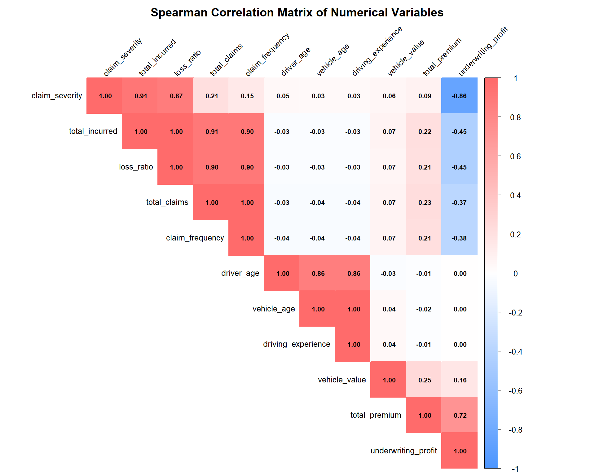
# Select numerical variables for Spearman correlation
spearman_data <- motor_insurance_final %>%
select(
driver_age,
vehicle_age,
driving_experience,
vehicle_value,
total_premium,
total_incurred,
total_claims,
loss_ratio,
claim_frequency,
claim_severity,
underwriting_profit
) %>%
mutate(
across(everything(), ~ ifelse(is.finite(.), ., NA))
)
# Compute Spearman correlation matrix
spearman_cor_matrix <- cor(
spearman_data,
use = "pairwise.complete.obs",
method = "spearman"
)
# Plot Spearman correlation matrix
corrplot::corrplot(
spearman_cor_matrix,
method = "color",
type = "upper",
order = "hclust",
addCoef.col = "black",
number.cex = 0.65,
tl.col = "black",
tl.srt = 45,
tl.cex = 0.8,
col = colorRampPalette(c("#4D96FF", "white", "#FF6B6B"))(200),
title = "Spearman Correlation Matrix of Numerical Variables",
mar = c(0, 0, 2, 0)
)
NoteFindings
Spearman correlation results show that most numerical variables have weak or near-zero relationships with the key insurance outcomes, suggesting that no single variable strongly explains claim frequency, claim severity or loss ratio on its own.
Age-related variables such as
driver_age,vehicle_ageanddriving_experienceshow very low correlations with the outcome variables. This suggests that age may not have a strong direct monotonic relationship with profitability or claims outcomes in this dataset.Stronger patterns are likely to be found through categorical group comparisons or segmented analysis instead of correlation alone, since insurance risk may depend on non-linear effects, policy type, bonus score, vehicle characteristics or claim history.
A separate correlation matrix was also considered for claim policies only, since claim severity is more meaningful when a claim has occurred. This helps reduce the effect of zero-claim policies and provides a clearer view of relationships among claim-related variables.
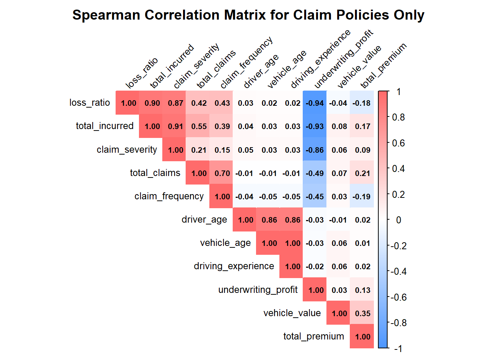
NoteFindings
- After filtering to policies with claims only, the claim-related variables show stronger relationships.
total_incurredhas a strong positive correlation withclaim_severity(0.91), which makes sense because severity increases when the incurred claim amount is higher. total_claimsandclaim_frequencyalso show a strong positive correlation (0.70), suggesting that policies with more claims naturally tend to have higher claim frequency.- Age-related variables such as
driver_age,vehicle_ageanddriving_experiencestill show near-zero correlations with claim outcomes, suggesting that age-related factors may not have a strong monotonic relationship with claim severity, frequency or loss ratio in this dataset.
Bivariate Visual Analysis
The Spearman correlation analysis showed that most numerical variables had weak or near-zero monotonic relationships with the key insurance outcomes, such as claim frequency, claim severity, loss ratio and underwriting profit. This suggests that the relationships in the dataset may not be strongly linear or direct.
Therefore, the bivariate visual analysis focuses on selected variables that are more meaningful from an insurance and business perspective, such as policy type, bonus score, vehicle characteristics and age-related groups. Instead of using every variable, selected charts are used to check whether clearer patterns appear through categorical group comparisons, segmented distributions or non-linear relationships. This helps keep the analysis focused while also avoiding repetitive charts where the correlation results already suggest limited direct relationship.
Profitability
1. Loss Ratio Group vs Policy Type
The stacked percentage bar chart is used to compare the relationship between two categorical variables: policy_type and loss_ratio_group. The x-axis represents the different policy types, while the y-axis shows the percentage of policies within each policy type. Each bar is divided into three profitability groups: No Loss, Profitable / Acceptable, and Loss-making. Using percentages instead of raw counts allows the profitability composition of each policy type to be compared fairly, even though some policy types have many more policies than others. This visualisation helps identify whether certain policy types have a higher proportion of loss-making policies, which may indicate poorer profitability performance.
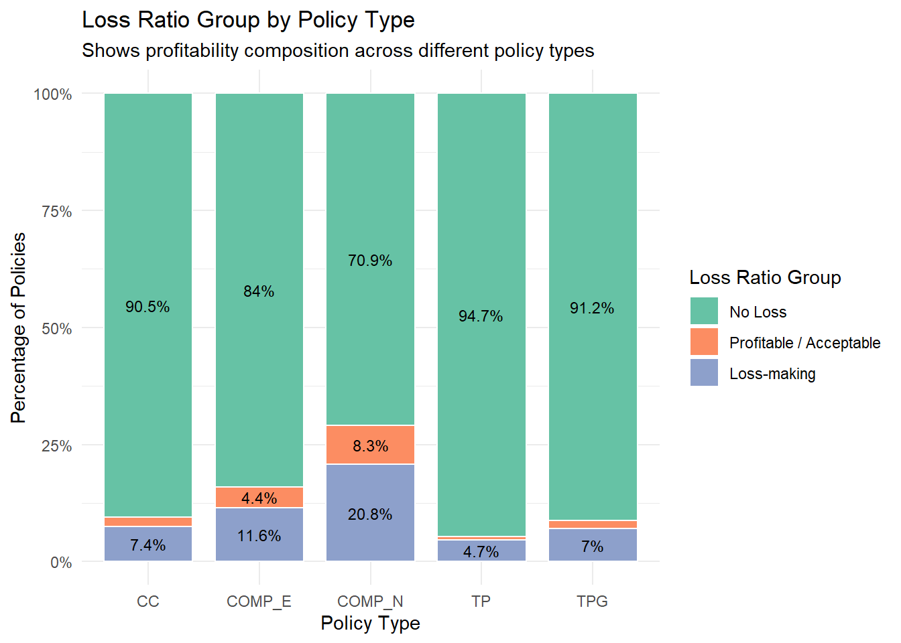
profitability_policy <- motor_insurance_final %>%
filter(!is.na(loss_ratio_group), !is.na(policy_type)) %>%
count(policy_type, loss_ratio_group) %>%
group_by(policy_type) %>%
mutate(
percentage = n / sum(n) * 100,
label = ifelse(percentage >= 3, paste0(round(percentage, 1), "%"), "")
) %>%
ungroup() %>%
mutate(
policy_type = factor(policy_type, levels = c("CC", "COMP_E", "COMP_N", "TP", "TPG")),
loss_ratio_group = factor(
loss_ratio_group,
levels = c("No Loss", "Profitable / Acceptable", "Loss-making")
)
)
ggplot(profitability_policy,
aes(x = policy_type, y = percentage, fill = loss_ratio_group)) +
geom_col(colour = "white", width = 0.8) +
geom_text(
aes(label = label),
position = position_stack(vjust = 0.5),
size = 3.2
) +
scale_y_continuous(
labels = function(x) paste0(x, "%")
) +
scale_fill_brewer(palette = "Set2") +
labs(
title = "Loss Ratio Group by Policy Type",
subtitle = "Shows profitability composition across different policy types",
x = "Policy Type",
y = "Percentage of Policies",
fill = "Loss Ratio Group"
) +
theme_minimal() +
theme(
legend.position = "right"
)
NoteInsights from visuals
- Most policies have no loss across all policy types, with TP having the highest “No Loss” proportion at 94.7%, followed by TPG at 91.2% and CC at 90.5%.
- COMP_N looks the riskiest, because it has the highest proportion of Loss-making policies at 20.8%, much higher than the other policy types
- Profitable / Acceptable policies form a small share overall, but COMP_N has the highest proportion at 8.3%, while COMP_E is next at 4.4%
Statistical Test
Since both policy_type and loss_ratio_group are categorical variables, a Chi-square test of independence was used to validate whether profitability composition differs across policy types.
Show code
profitability_table <- motor_insurance_final %>%
filter(!is.na(policy_type), !is.na(loss_ratio_group)) %>%
count(policy_type, loss_ratio_group) %>%
pivot_wider(
names_from = loss_ratio_group,
values_from = n,
values_fill = 0
)
profitability_matrix <- profitability_table %>%
column_to_rownames("policy_type") %>%
as.matrix()
chisq.test(profitability_matrix)
Pearson's Chi-squared test
data: profitability_matrix
X-squared = 7921.4, df = 8, p-value < 2.2e-16
NoteStatistical Test Findings
- The Chi-square test shows a statistically significant association between
policy_typeandloss_ratio_group(χ² = 7921.4, df = 8, p < 0.001). - Most policy types are dominated by the No Loss group, especially
TPandTPG, which have very high proportions of no-loss policies. COMP_Nstands out as the riskier policy type, as it has a relatively higher proportion of Loss-making policies compared with the other policy types.
2. Underwriting Profit vs Bonus Score
A half-eye plot with embedded boxplot was used to compare underwriting_profit across bonus_score groups. This plot was chosen because it combines the strengths of both a density plot and a boxplot. The half-eye density shows where underwriting profit values are more concentrated, while the boxplot summarises the median and interquartile range. This makes it useful for comparing the shape, spread, and central tendency of profitability across policyholders with different past claims profiles. The red dashed line at zero represents the break-even point.
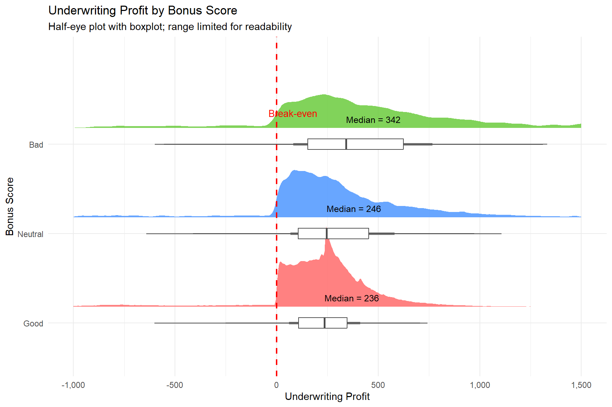
underwriting_bonus_data <- motor_insurance_final %>%
filter(
!is.na(bonus_score),
is.finite(underwriting_profit),
underwriting_profit >= -1000,
underwriting_profit <= 1500
) %>%
mutate(
bonus_score = factor(
bonus_score,
levels = c("Good", "Neutral", "Bad")
)
)
# Median values for annotation
median_bonus <- underwriting_bonus_data %>%
group_by(bonus_score) %>%
summarise(
median_profit = median(underwriting_profit, na.rm = TRUE)
)
ggplot(
underwriting_bonus_data,
aes(x = underwriting_profit, y = bonus_score, fill = bonus_score)
) +
ggdist::stat_halfeye(
adjust = 0.7,
width = 0.6,
justification = -0.2,
alpha = 0.85,
colour = "grey40"
) +
geom_boxplot(
width = 0.12,
outlier.shape = NA,
fill = "white",
colour = "grey30"
) +
geom_vline(
xintercept = 0,
linetype = "dashed",
colour = "red",
linewidth = 0.8
) +
geom_text(
data = median_bonus,
aes(
x = median_profit,
y = bonus_score,
label = paste0("Median = ", comma(round(median_profit, 0)))
),
inherit.aes = FALSE,
nudge_y = 0.28,
colour = "black",
size = 3.3,
hjust = 0
) +
annotate(
"text",
x = 80,
y = 3.35,
label = "Break-even",
colour = "red",
size = 3.5
) +
scale_x_continuous(labels = comma) +
scale_fill_manual(
values = c(
"Good" = "#FF6B6B",
"Neutral" = "#4D96FF",
"Bad" = "#6BCB3D"
)
) +
labs(
title = "Underwriting Profit by Bonus Score",
subtitle = "Half-eye plot with boxplot; range limited for readability",
x = "Underwriting Profit",
y = "Bonus Score"
) +
theme_minimal() +
theme(
legend.position = "none"
)
NoteInsights from visuals
- Most bonus score groups are concentrated above the break-even line, suggesting that most policies have positive underwriting profit within the displayed range.
- The Bad bonus score group has the highest median underwriting profit at 342, compared with Neutral = 246 and Good = 236.
- The Bad group also shows wider variation, but this should be interpreted carefully because it has far fewer policies than the Good group
Statistical Test
Since underwriting_profit is a numerical variable and bonus_score consists of three categorical groups, a Kruskal-Wallis test was used to assess whether underwriting profit differs across bonus score groups. This non-parametric test was selected because underwriting profit is skewed and contains outliers.
Show code
underwriting_bonus_test <- motor_insurance_final %>%
filter(
!is.na(bonus_score),
is.finite(underwriting_profit)
)
underwriting_bonus_test %>%
kruskal_test(underwriting_profit ~ bonus_score)# A tibble: 1 × 6
.y. n statistic df p method
* <chr> <int> <dbl> <int> <dbl> <chr>
1 underwriting_profit 352338 977. 2 6.32e-213 Kruskal-WallisSince the Kruskal-Wallis test is significant, pairwise Wilcoxon tests were conducted to identify which bonus score groups differ from each other. The Benjamini-Hochberg adjustment was used to control for multiple comparisons.
Show code
underwriting_bonus_test %>%
pairwise_wilcox_test(
underwriting_profit ~ bonus_score,
p.adjust.method = "BH"
)# A tibble: 3 × 9
.y. group1 group2 n1 n2 statistic p p.adj p.adj.signif
* <chr> <chr> <chr> <int> <int> <dbl> <dbl> <dbl> <chr>
1 underw… Bad Good 4693 339836 9.92e8 1.47e-181 4.41e-181 ****
2 underw… Bad Neutr… 4693 7809 2.10e7 7.44e- 42 1.12e- 41 ****
3 underw… Good Neutr… 339836 7809 1.21e9 6.53e- 38 6.53e- 38 ****
NoteStatistical Test Findings
- The Kruskal-Wallis test shows a statistically significant difference in underwriting_profit across bonus score groups.
- Pairwise Wilcoxon tests were conducted to identify which specific groups differed.
- All pairwise comparisons were significant after adjustment: Bad vs Good, Bad vs Neutral, and Good vs Neutral all had
p.adj < 0.001. - This suggests that bonus_score differs significantly with
underwriting profit.
3. Underwriting Profit vs Business Type
A violin plot with boxplot overlay is chosen because underwriting profit is a numerical profitability measure while business type is categorical. Violin shape can tell us where underwriting profit values are concentrated. The boxplot will show us the median and interquartile range.
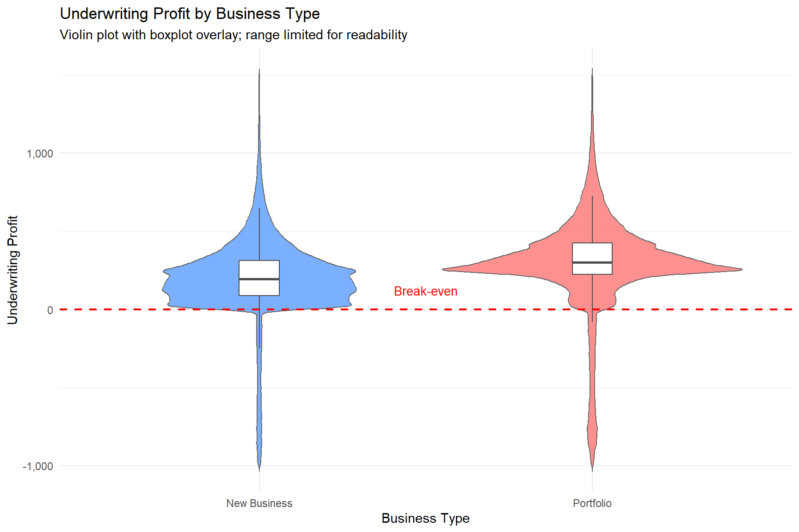
underwriting_business_data <- motor_insurance_final %>%
filter(
!is.na(business_type),
is.finite(underwriting_profit),
underwriting_profit >= -1000,
underwriting_profit <= 1500
) %>%
mutate(
business_type = case_when(
business_type == "NB" ~ "New Business",
business_type == "P" ~ "Portfolio",
business_type == "New Business" ~ "New Business",
business_type == "Portfolio" ~ "Portfolio",
TRUE ~ as.character(business_type)
),
business_type = factor(
business_type,
levels = c("New Business", "Portfolio")
)
)
ggplot(
underwriting_business_data,
aes(x = business_type, y = underwriting_profit, fill = business_type)
) +
geom_violin(
trim = FALSE,
alpha = 0.75,
colour = "grey40"
) +
geom_boxplot(
width = 0.12,
fill = "white",
colour = "grey30",
outlier.shape = NA
) +
geom_hline(
yintercept = 0,
linetype = "dashed",
colour = "red",
linewidth = 0.8
) +
annotate(
"text",
x = 1.5,
y = 120,
label = "Break-even",
colour = "red",
size = 3.5
) +
scale_y_continuous(labels = scales::comma) +
scale_fill_manual(
values = c(
"New Business" = "#4D96FF",
"Portfolio" = "#FF6B6B"
)
) +
labs(
title = "Underwriting Profit by Business Type",
subtitle = "Violin plot with boxplot overlay; range limited for readability",
x = "Business Type",
y = "Underwriting Profit"
) +
theme_minimal() +
theme(
legend.position = "none"
)
NoteInsights from visuals
- Both New Business and Portfolio are mostly concentrated above the break-even line: many policies generate positive underwriting profit
- New Business has more concentration closer to the lower positive profit range, while Portfolio is more concentrated at a slightly higher profit range
- Both groups still show negative underwriting profit values, meaning some policies are loss-making, but the main concentration is on the profitable side
Statistical Test
A Wilcoxon rank-sum test was used to assess whether underwriting profit differs between New Business and Portfolio policies. This non-parametric test was selected because underwriting_profit is skewed and contains outliers.
Show code
underwriting_business_test <- motor_insurance_final %>%
filter(
!is.na(business_type),
is.finite(underwriting_profit)
) %>%
mutate(
business_type = case_when(
business_type == "NB" ~ "New Business",
business_type == "P" ~ "Portfolio",
business_type == "New Business" ~ "New Business",
business_type == "Portfolio" ~ "Portfolio",
TRUE ~ as.character(business_type)
),
business_type = factor(
business_type,
levels = c("New Business", "Portfolio")
)
)
wilcox.test(
underwriting_profit ~ business_type,
data = underwriting_business_test
)
Wilcoxon rank sum test with continuity correction
data: underwriting_profit by business_type
W = 9369340678, p-value < 2.2e-16
alternative hypothesis: true location shift is not equal to 0
NoteStatistical Test Findings
The Wilcoxon rank-sum test shows a statistically significant difference in underwriting profit between New Business and Portfolio policies.
The result is significant with p < 0.001, suggesting that underwriting profit differs across the two business types.
This supports the violin plot finding, where Portfolio policies generally appear to have higher underwriting profit than New Business policies.
This suggests that existing portfolio policies may be more profitable than newly acquired policies.
4. Driver Age vs Loss Ratio Group
A median-IQR error bar plot was used to compare underwriting profit across driver age bands. The point and line show the median underwriting profit, while the vertical error bars represent the interquartile range, or the middle 50% of policies in each age group.
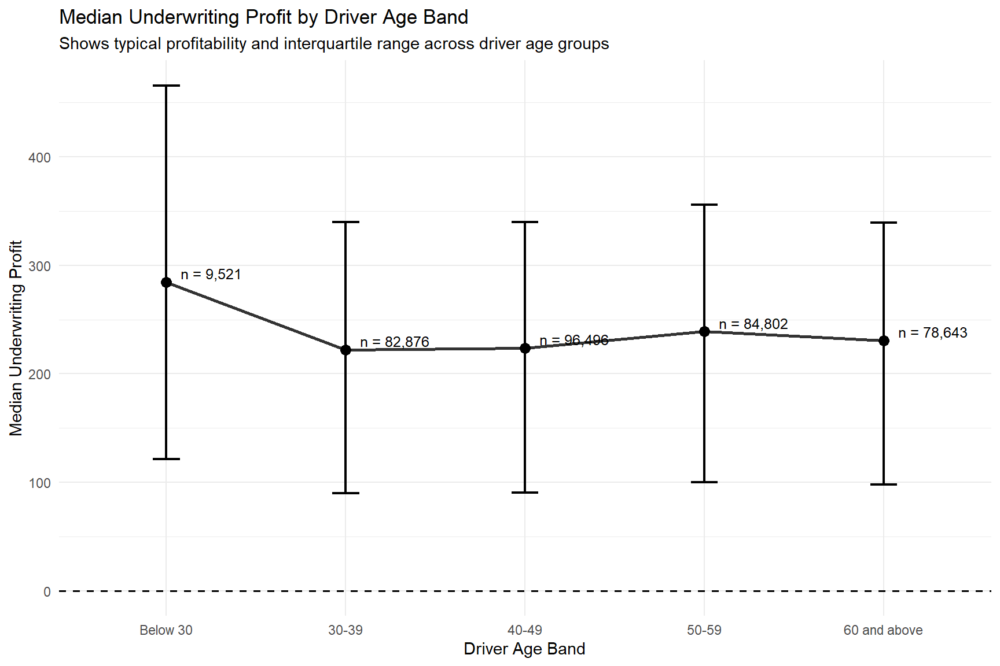
# Prepare data
age_profit_data <- motor_insurance_final %>%
filter(
!is.na(driver_age),
!is.na(underwriting_profit),
is.finite(driver_age),
is.finite(underwriting_profit)
) %>%
mutate(
driver_age_band = case_when(
driver_age < 30 ~ "Below 30",
driver_age >= 30 & driver_age < 40 ~ "30-39",
driver_age >= 40 & driver_age < 50 ~ "40-49",
driver_age >= 50 & driver_age < 60 ~ "50-59",
driver_age >= 60 ~ "60 and above"
),
driver_age_band = factor(
driver_age_band,
levels = c("Below 30", "30-39", "40-49", "50-59", "60 and above")
)
) %>%
filter(!is.na(driver_age_band))
# Summarise profitability by age band
age_profit_summary <- age_profit_data %>%
group_by(driver_age_band) %>%
summarise(
n = n(),
median_underwriting_profit = median(underwriting_profit, na.rm = TRUE),
q1 = quantile(underwriting_profit, 0.25, na.rm = TRUE),
q3 = quantile(underwriting_profit, 0.75, na.rm = TRUE),
.groups = "drop"
) %>%
mutate(
label = paste0("n = ", scales::comma(n))
)
# Plot median underwriting profit with IQR
age_profit_summary %>%
ggplot(aes(
x = driver_age_band,
y = median_underwriting_profit,
group = 1
)) +
geom_errorbar(
aes(ymin = q1, ymax = q3),
width = 0.15,
linewidth = 0.8
) +
geom_line(
linewidth = 0.9,
alpha = 0.8
) +
geom_point(
size = 3
) +
geom_text(
aes(label = label),
position = position_nudge(x = 0.08, y = 8),
hjust = 0,
size = 3.3
) +
geom_hline(
yintercept = 0,
linetype = "dashed",
linewidth = 0.7
) +
scale_y_continuous(labels = scales::comma) +
labs(
title = "Median Underwriting Profit by Driver Age Band",
subtitle = "Shows typical profitability and interquartile range across driver age groups",
x = "Driver Age Band",
y = "Median Underwriting Profit"
) +
theme_minimal()
NoteInsights from Visuals
Median underwriting profit is positive across all driver age bands, suggesting that each age group is generally profitable at the median level.
The Below 30 group has the highest median underwriting profit, but it also has the smallest sample size compared with the other age bands. Hence, this difference should be interpreted carefully.
For the other age bands, median underwriting profit is fairly similar, mostly around the low-to-mid 200 range. This means that driver age does not appear to be a strong standalone factor in explaining underwriting profitability as what we concluded in the correlation plot
Statistical Test
Since underwriting_profit is a numerical variable and driver_age_band consists of five categorical groups, a Kruskal-Wallis test was used to assess whether underwriting profit differs across driver age bands. This non-parametric test was selected because underwriting profit is skewed and contains extreme values.
Show code
age_profit_test_data <- motor_insurance_final %>%
filter(
is.finite(driver_age),
is.finite(underwriting_profit)
) %>%
mutate(
driver_age_band = case_when(
driver_age < 30 ~ "Below 30",
driver_age >= 30 & driver_age < 40 ~ "30-39",
driver_age >= 40 & driver_age < 50 ~ "40-49",
driver_age >= 50 & driver_age < 60 ~ "50-59",
driver_age >= 60 ~ "60 and above"
),
driver_age_band = factor(
driver_age_band,
levels = c("Below 30", "30-39", "40-49", "50-59", "60 and above")
)
) %>%
filter(!is.na(driver_age_band))
age_profit_test_data %>%
kruskal_test(underwriting_profit ~ driver_age_band)# A tibble: 1 × 6
.y. n statistic df p method
* <chr> <int> <dbl> <int> <dbl> <chr>
1 underwriting_profit 352338 962. 4 7.70e-207 Kruskal-WallisSince the Kruskal-Wallis test is significant, pairwise Wilcoxon tests were conducted to identify which age bands differ from each other. The Benjamini-Hochberg adjustment was used to control for multiple comparisons.
Show code
age_profit_test_data %>%
pairwise_wilcox_test(
underwriting_profit ~ driver_age_band,
p.adjust.method = "BH"
)# A tibble: 10 × 9
.y. group1 group2 n1 n2 statistic p p.adj p.adj.signif
* <chr> <chr> <chr> <int> <int> <dbl> <dbl> <dbl> <chr>
1 underwr… Below… 30-39 9521 82876 4.63e8 6.51e-168 6.51e-167 ****
2 underwr… Below… 40-49 9521 96496 5.36e8 2.58e-161 1.29e-160 ****
3 underwr… Below… 50-59 9521 84802 4.59e8 1.65e-105 4.12e-105 ****
4 underwr… Below… 60 an… 9521 78643 4.35e8 4.69e-145 1.56e-144 ****
5 underwr… 30-39 40-49 82876 96496 3.98e9 1.2 e- 1 1.2 e- 1 ns
6 underwr… 30-39 50-59 82876 84802 3.37e9 1.22e- 46 2.44e- 46 ****
7 underwr… 30-39 60 an… 82876 78643 3.21e9 1.37e- 8 1.71e- 8 ****
8 underwr… 40-49 50-59 96496 84802 3.94e9 2.20e- 40 3.67e- 40 ****
9 underwr… 40-49 60 an… 96496 78643 3.75e9 1.12e- 5 1.24e- 5 ****
10 underwr… 50-59 60 an… 84802 78643 3.42e9 5.11e- 18 7.30e- 18 ****
NoteStatistical Test Findings
The Kruskal-Wallis test shows a statistically significant difference in underwriting profit across driver age bands (χ² = 961.54, df = 4, p < 0.001). This suggests that underwriting profit is not distributed exactly the same across all age groups.
The Pairwise Wilcoxon test with Bonferroni adjustment shows that most age band pairs are significantly different. However, 30–39 vs 40–49 is not significant (p = 1.000), suggesting that these two age groups have very similar underwriting profit distributions.
This is generally consistent with the visual analysis. The chart shows that underwriting profit is positive across all age bands, with the Below 30 group having a higher median. However, most older age bands look fairly close visually, so driver age may have a statistically significant but not strongly relationship with underwriting profit.
5. Average Loss Ratio vs Year
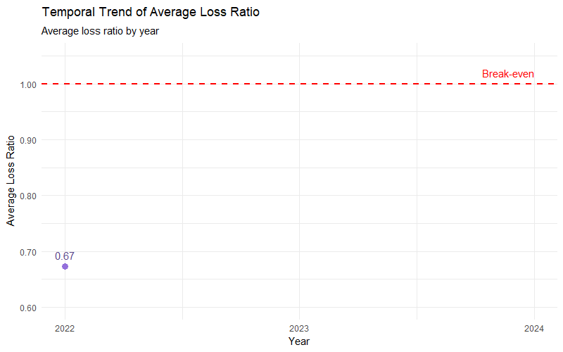
yearly_loss_ratio <- motor_insurance_final %>%
filter(is.finite(loss_ratio)) %>%
mutate(year_num = as.numeric(as.character(year))) %>%
group_by(year_num) %>%
summarise(
avg_loss_ratio = mean(loss_ratio, na.rm = TRUE),
.groups = "drop"
)
p_temporal_loss <- ggplot(
yearly_loss_ratio,
aes(x = year_num, y = avg_loss_ratio)
) +
geom_hline(
yintercept = 1,
linetype = "dashed",
colour = "red",
linewidth = 0.8
) +
geom_line(
colour = "mediumpurple",
linewidth = 1.2
) +
geom_point(
colour = "mediumpurple",
size = 3
) +
geom_text(
aes(label = round(avg_loss_ratio, 2)),
vjust = -0.8,
size = 4,
colour = "mediumpurple4"
) +
annotate(
"text",
x = max(yearly_loss_ratio$year_num),
y = 1.02,
label = "Break-even",
colour = "red",
hjust = 1,
size = 4
) +
scale_x_continuous(
breaks = yearly_loss_ratio$year_num
) +
scale_y_continuous(
limits = c(0.6, 1.05),
labels = label_number(accuracy = 0.01)
) +
labs(
title = "Temporal Trend of Average Loss Ratio",
subtitle = "Average loss ratio by year",
x = "Year",
y = "Average Loss Ratio"
) +
theme_minimal() +
transition_reveal(year_num)
animate(
p_temporal_loss,
nframes = 80,
fps = 10,
width = 800,
height = 500,
end_pause = 20,
renderer = gifski_renderer()
)
NoteInsights from Visuals
The average loss ratio increased from 0.67 in 2022 to 0.73 in 2023, and further to 0.87 in 2024.
Although the average loss ratio remains below the break-even point of 1.00 across all three years, the upward trend suggests that portfolio profitability is weakening over time.
This means that a larger share of premium collected is being used to cover incurred claims each year.
If this trend continues, the portfolio may face greater profitability pressure, as the average loss ratio is moving closer to the loss-making threshold.
Statistical Test
Since loss_ratio is a numerical variable and year consists of three groups, a Kruskal-Wallis test was used to assess whether loss ratio differs across years. This non-parametric test was selected because loss ratio is highly skewed and contains extreme values.
Show code
loss_ratio_year_test <- motor_insurance_final %>%
filter(
!is.na(year),
is.finite(loss_ratio)
)
loss_ratio_year_test %>%
kruskal_test(loss_ratio ~ year)# A tibble: 1 × 6
.y. n statistic df p method
* <chr> <int> <dbl> <int> <dbl> <chr>
1 loss_ratio 352289 196. 2 2.69e-43 Kruskal-WallisKruskal-Wallis test is significant, pairwise Wilcoxon tests were conducted to identify which year pairs differ from each other. The Benjamini-Hochberg adjustment was used to control for multiple comparisons.
Show code
loss_ratio_year_test %>%
pairwise_wilcox_test(
loss_ratio ~ year,
p.adjust.method = "BH"
)# A tibble: 3 × 9
.y. group1 group2 n1 n2 statistic p p.adj p.adj.signif
* <chr> <chr> <chr> <int> <int> <dbl> <dbl> <dbl> <chr>
1 loss_rat… 2022 2023 66889 118264 3.92e9 9.33e-10 9.33e-10 ****
2 loss_rat… 2022 2024 66889 167136 5.48e9 2.61e-40 7.83e-40 ****
3 loss_rat… 2023 2024 118264 167136 9.78e9 3.83e-17 5.74e-17 ****
NoteStatistical Test Findings
The pairwise Wilcoxon test shows that
loss_ratiodiffers significantly across all year pairs.2022 vs 2023 is statistically significant after adjustment, with
p.adj < 0.001.2022 vs 2024 and 2023 vs 2024 are also statistically significant after adjustment, with
p.adj < 0.001.This confirms that the increase in average loss ratio observed in the temporal line chart is statistically supported, suggesting that portfolio profitability changed significantly across years.
Volatility
1. Claim Severity vs Municipality Type
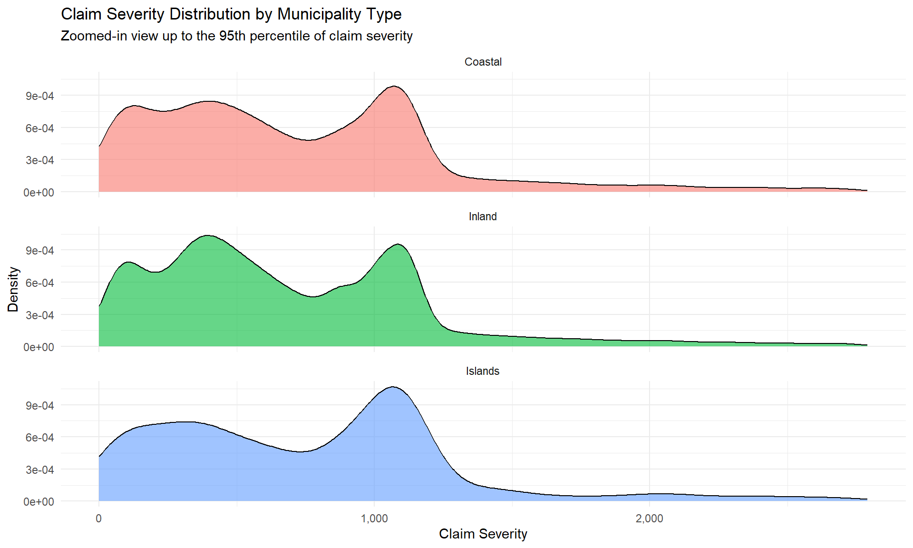
severity_muni_data <- motor_insurance_final %>%
filter(
total_claims > 0,
!is.na(municipality_type),
!is.na(claim_severity),
is.finite(claim_severity),
claim_severity > 0
)
severity_zoom_limit <- quantile(
severity_muni_data$claim_severity,
0.95,
na.rm = TRUE
)
severity_muni_data %>%
filter(claim_severity <= severity_zoom_limit) %>%
ggplot(aes(
x = claim_severity,
fill = municipality_type
)) +
geom_density(
alpha = 0.6
) +
facet_wrap(~ municipality_type, ncol = 1) +
scale_x_continuous(labels = scales::comma) +
labs(
title = "Claim Severity Distribution by Municipality Type",
subtitle = "Zoomed-in view up to the 95th percentile of claim severity",
x = "Claim Severity",
y = "Density"
) +
theme_minimal() +
theme(
legend.position = "none"
)
NoteInsights from Visuals
Claim severity shows a broadly similar distribution across Coastal, Inland and Islands, with most claims concentrated below around 1,200 after zooming into the 95th percentile.
All three municipality types show a right-skewed pattern, meaning most claims are relatively low in severity, while a smaller number of claims have higher severity.
The Islands group appears to have a slightly stronger concentration around the higher-severity range near 1,000–1,200, while Coastal and Inland show more spread across both lower and mid-severity values. However, the overall patterns are still quite similar, so municipality type may not be a very strong differentiator of claim severity.
Statistical Test
Since claim_severity is a numerical variable and municipality_type consists of three categorical groups, a Kruskal-Wallis test was used to assess whether claim severity differs across municipality types. This non-parametric test was selected because claim severity is highly skewed and contains high-severity outliers. Only policies with claims were included because claim severity is only meaningful when a claim exists.
Show code
severity_muni_test_data <- motor_insurance_final %>%
filter(
total_claims > 0,
!is.na(municipality_type),
is.finite(claim_severity),
claim_severity > 0
)
severity_muni_test_data %>%
kruskal_test(claim_severity ~ municipality_type)# A tibble: 1 × 6
.y. n statistic df p method
* <chr> <int> <dbl> <int> <dbl> <chr>
1 claim_severity 41978 50.3 2 1.21e-11 Kruskal-WallisSince the Kruskal-Wallis test is significant, pairwise Wilcoxon tests were conducted. The Benjamini-Hochberg adjustment was used to control for multiple comparisons.
Show code
severity_muni_test_data %>%
pairwise_wilcox_test(
claim_severity ~ municipality_type,
p.adjust.method = "BH"
)# A tibble: 3 × 9
.y. group1 group2 n1 n2 statistic p p.adj p.adj.signif
* <chr> <chr> <chr> <int> <int> <dbl> <dbl> <dbl> <chr>
1 claim_sever… Coast… Inland 11288 28282 1.64e8 2.53e- 5 3.8 e-5 ****
2 claim_sever… Coast… Islan… 11288 2408 1.29e7 1.29e- 4 1.29e-4 ***
3 claim_sever… Inland Islan… 28282 2408 3.14e7 3.56e-10 1.07e-9 ****
NoteStatistical Test Findings
The Kruskal-Wallis test shows a statistically significant difference in claim severity across municipality types (χ² = 50.269, df = 2, p < 0.001). This suggests that claim severity is not distributed exactly the same across Coastal, Inland and Islands policies.
The Pairwise Wilcoxon tests with Bonferroni adjustment show that all municipality type pairs are significantly different: Inland vs Coastal (p < 0.001), Islands vs Coastal (p < 0.001), and Islands vs Inland (p < 0.001).
This supports the visual analysis because the claim severity patterns are not exactly the same across municipality types. However, the differences are not very obvious from the chart, so municipality type may have some relationship with claim severity, but it does not appear to be a strong standalone factor.
2. Claim Frequency vs Vehicle Value Band
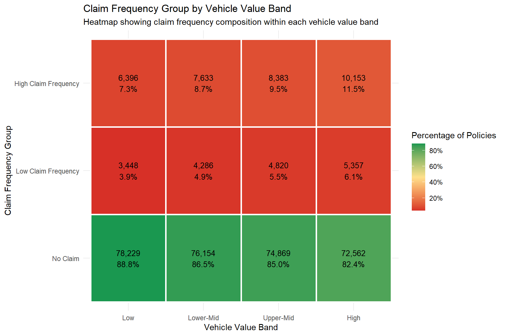
# Prepare data
vehicle_claim_freq_heatmap_data <- motor_insurance_final %>%
mutate(
claim_frequency_group = case_when(
claim_frequency == 0 ~ "No Claim",
claim_frequency > 0 & claim_frequency <= 1 ~ "Low Claim Frequency",
claim_frequency > 1 ~ "High Claim Frequency"
)
) %>%
filter(
!is.na(vehicle_value),
!is.na(claim_frequency_group),
is.finite(vehicle_value),
vehicle_value > 0
) %>%
mutate(
vehicle_value_band = ntile(vehicle_value, 4),
vehicle_value_band = factor(
vehicle_value_band,
levels = 1:4,
labels = c("Low", "Lower-Mid", "Upper-Mid", "High")
),
claim_frequency_group = factor(
claim_frequency_group,
levels = c("No Claim", "Low Claim Frequency", "High Claim Frequency")
)
) %>%
count(vehicle_value_band, claim_frequency_group) %>%
group_by(vehicle_value_band) %>%
mutate(
percentage = n / sum(n),
label = paste0(scales::comma(n), "\n", scales::percent(percentage, accuracy = 0.1))
) %>%
ungroup()
# Heatmap
vehicle_claim_freq_heatmap_data %>%
ggplot(aes(
x = vehicle_value_band,
y = claim_frequency_group,
fill = percentage
)) +
geom_tile(colour = "white", linewidth = 1) +
geom_text(
aes(label = label),
size = 3.5,
colour = "black"
) +
scale_fill_gradientn(
colours = c("#d73027", "#fee08b", "#1a9850"),
labels = scales::percent
) +
labs(
title = "Claim Frequency Group by Vehicle Value Band",
subtitle = "Heatmap showing claim frequency composition within each vehicle value band",
x = "Vehicle Value Band",
y = "Claim Frequency Group",
fill = "Percentage of Policies"
) +
theme_minimal()
NoteInsights from Visuals
Across all vehicle value bands, the majority of policies fall under the No Claim group. However, this proportion gradually declines as vehicle value increases, from 88.8% in the Low band to 82.4% in the High band.
The proportion of High Claim Frequency policies increases steadily across vehicle value bands, rising from 7.3% in the Low band to 11.5% in the High band. This suggests that higher-value vehicles are associated with a greater concentration of more frequent claims.
A similar upward pattern is seen for Low Claim Frequency policies, which increase from 3.9% to 6.1% across the bands. Overall, this indicates that higher vehicle value bands tend to have slightly less stable claim experience compared with lower-value bands.
Statistical Test
Since both vehicle_value_band and claim_frequency_group are categorical variables, a Chi-square test of independence was used to assess whether claim frequency composition differs across vehicle value bands.
Show code
vehicle_claim_freq_test_data <- motor_insurance_final %>%
mutate(
claim_frequency_group = case_when(
claim_frequency == 0 ~ "No Claim",
claim_frequency > 0 & claim_frequency <= 1 ~ "Low Claim Frequency",
claim_frequency > 1 ~ "High Claim Frequency"
)
) %>%
filter(
is.finite(vehicle_value),
vehicle_value > 0,
!is.na(claim_frequency_group)
) %>%
mutate(
vehicle_value_band = ntile(vehicle_value, 4),
vehicle_value_band = factor(
vehicle_value_band,
levels = 1:4,
labels = c("Low", "Lower-Mid", "Upper-Mid", "High")
),
claim_frequency_group = factor(
claim_frequency_group,
levels = c("No Claim", "Low Claim Frequency", "High Claim Frequency")
)
)
vehicle_claim_freq_table <- vehicle_claim_freq_test_data %>%
count(vehicle_value_band, claim_frequency_group) %>%
pivot_wider(
names_from = claim_frequency_group,
values_from = n,
values_fill = 0
)
vehicle_claim_freq_matrix <- vehicle_claim_freq_table %>%
column_to_rownames("vehicle_value_band") %>%
as.matrix()
chisq.test(vehicle_claim_freq_matrix)
Pearson's Chi-squared test
data: vehicle_claim_freq_matrix
X-squared = 1577.9, df = 6, p-value < 2.2e-16
NoteStatistical Test Findings
The Chi-square test shows a statistically significant association between
vehicle_value_bandandclaim_frequency_group(χ² = 1577.9, df = 6, p < 0.001). Claim frequency group is not the same across vehicle value bands.This supports the heatmap, where the proportion of No Claim policies decreases as vehicle value increases, while both Low Claim Frequency and High Claim Frequency policies increase.
Higher-value vehicles seem to have slightly more claim activity compared with lower-value vehicles. However, most policies still have no claims across all vehicle value bands, so vehicle value is related to claim frequency, but it is not the only factor explaining claims.
3. Claim Frequency Group vs Circulation Area
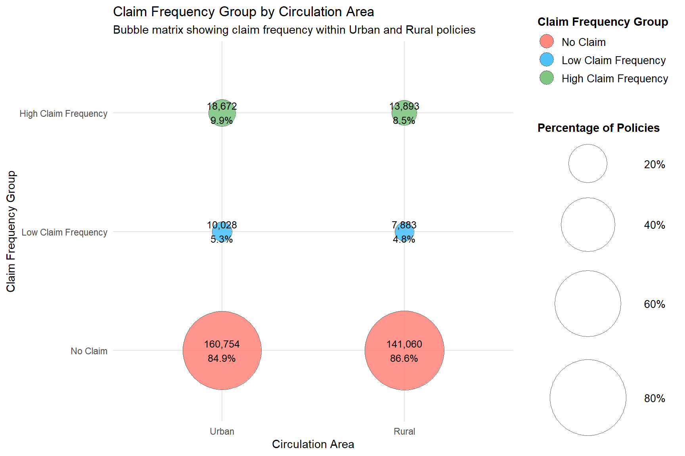
# Prepare data
circulation_claim_freq_bubble <- motor_insurance_final %>%
mutate(
claim_frequency_group = case_when(
claim_frequency == 0 ~ "No Claim",
claim_frequency > 0 & claim_frequency <= 1 ~ "Low Claim Frequency",
claim_frequency > 1 ~ "High Claim Frequency"
)
) %>%
filter(
!is.na(circulation_area),
!is.na(claim_frequency_group)
) %>%
mutate(
circulation_area = factor(
circulation_area,
levels = c("Urban", "Rural")
),
claim_frequency_group = factor(
claim_frequency_group,
levels = c("No Claim", "Low Claim Frequency", "High Claim Frequency")
)
) %>%
count(circulation_area, claim_frequency_group, name = "n") %>%
group_by(circulation_area) %>%
mutate(
percentage = n / sum(n),
label = paste0(scales::comma(n), "\n", scales::percent(percentage, accuracy = 0.1))
) %>%
ungroup()
# Bubble matrix plot
circulation_claim_freq_bubble %>%
ggplot(aes(
x = circulation_area,
y = claim_frequency_group
)) +
geom_point(
aes(size = percentage, fill = claim_frequency_group),
shape = 21,
colour = "grey35",
alpha = 0.9
) +
geom_text(
aes(label = label),
size = 3.3,
colour = "black"
) +
scale_size_area(
max_size = 35,
labels = scales::percent,
name = "Percentage of Policies"
) +
scale_fill_manual(
values = c(
"No Claim" = "#FF8A80",
"Low Claim Frequency" = "#4FC3F7",
"High Claim Frequency" = "#81C784"
),
name = "Claim Frequency Group"
) +
guides(
fill = guide_legend(
order = 1,
override.aes = list(size = 6, alpha = 1)
),
size = guide_legend(order = 2)
) +
labs(
title = "Claim Frequency Group by Circulation Area",
subtitle = "Bubble matrix showing claim frequency within Urban and Rural policies",
x = "Circulation Area",
y = "Claim Frequency Group"
) +
theme_minimal() +
theme(
panel.grid.major = element_line(colour = "grey90"),
legend.position = "right",
legend.box = "vertical",
legend.spacing.y = unit(0.6, "cm"),
legend.margin = margin(t = 8, r = 10, b = 8, l = 12),
legend.title = element_text(face = "bold"),
legend.text = element_text(size = 10)
)
NoteInsights from Visuals
Both Urban and Rural policies are mainly concentrated in the No Claim group which could mean that most policies did not record claims regardless of circulation area
Urban policies show a slightly higher share of High Claim Frequency policies at 9.9%, compared with 8.5% for Rural policies
Rural policies have a slightly higher No Claim proportion at 86.6%, compared with 84.9% for Urban policies. This suggests that Urban policies may have slightly more claim activity, but the overall difference is not very large visually.
Statistical Test
Since both claim_frequency_group and circulation_area are categorical variables, a Chi-square test of independence was used to assess whether claim frequency composition differs between Urban and Rural policies.
Show code
circulation_claim_freq_test_data <- motor_insurance_final %>%
mutate(
claim_frequency_group = case_when(
claim_frequency == 0 ~ "No Claim",
claim_frequency > 0 & claim_frequency <= 1 ~ "Low Claim Frequency",
claim_frequency > 1 ~ "High Claim Frequency",
)
) %>%
filter(
!is.na(circulation_area),
!is.na(claim_frequency_group)
) %>%
mutate(
claim_frequency_group = factor(
claim_frequency_group,
levels = c("No Claim", "Low Claim Frequency", "High Claim Frequency")
)
)
circulation_claim_freq_table <- circulation_claim_freq_test_data %>%
count(circulation_area, claim_frequency_group) %>%
pivot_wider(
names_from = claim_frequency_group,
values_from = n,
values_fill = 0
)
circulation_claim_freq_matrix <- circulation_claim_freq_table %>%
column_to_rownames("circulation_area") %>%
as.matrix()
chisq.test(circulation_claim_freq_matrix)
Pearson's Chi-squared test
data: circulation_claim_freq_matrix
X-squared = 233.44, df = 2, p-value < 2.2e-16
NoteStatistical Test Findings
The Chi-square test shows a statistically significant association between
circulation_areaandclaim_frequency_group(χ² = 233.44, df = 2, p < 0.001). This suggests that claim frequency group is not distributed exactly the same between Urban and Rural policies.This supports the visual analysis, where Urban policies have a slightly higher proportion of High Claim Frequency policies, while Rural policies have a slightly higher proportion of No Claim policies.
Urban policies appear to have slightly more claim activity than Rural policies. However, most policies in both groups still fall under the No Claim group, so the difference is statistically significant but not very large visually.
4. Claim Severity vs Driving Experience Group
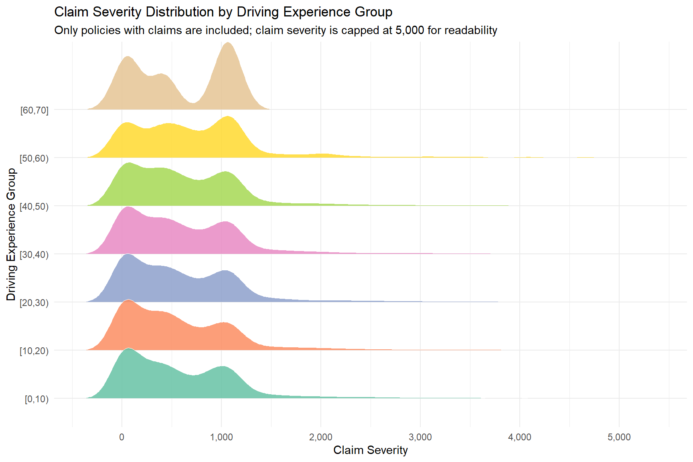
# Prepare data: only policies with claims
severity_exp_ridge <- motor_insurance_final %>%
filter(
total_claims > 0,
is.finite(driving_experience),
is.finite(claim_severity),
driving_experience >= 0,
driving_experience <= 70,
claim_severity >= 0,
claim_severity <= 5000
) %>%
mutate(
driving_experience_group = cut(
driving_experience,
breaks = seq(0, 70, by = 10),
include.lowest = TRUE,
right = FALSE
)
) %>%
filter(!is.na(driving_experience_group))
# Ridgeline density plot
ggplot(
severity_exp_ridge,
aes(
x = claim_severity,
y = driving_experience_group,
fill = driving_experience_group
)
) +
ggridges::geom_density_ridges(
scale = 1.4,
rel_min_height = 0.01,
colour = "white",
linewidth = 0.35,
alpha = 0.85
) +
scale_x_continuous(
labels = scales::comma,
breaks = seq(0, 5000, by = 1000)
) +
scale_fill_brewer(palette = "Set2") +
labs(
title = "Claim Severity Distribution by Driving Experience Group",
subtitle = "Only policies with claims are included; claim severity is capped at 5,000 for readability",
x = "Claim Severity",
y = "Driving Experience Group"
) +
theme_minimal() +
theme(
legend.position = "none"
)
# Spearman correlation test using original continuous variables
severity_exp_test <- motor_insurance_final %>%
filter(
total_claims > 0,
is.finite(driving_experience),
is.finite(claim_severity)
)
severity_exp_test %>%
cor_test(
driving_experience,
claim_severity,
method = "spearman"
)
NoteInsights from Visuals
Claim severity is right-skewed across all driving experience groups, with most claims concentrated at the lower severity range.
The distribution shapes are broadly similar across experience groups, suggesting that driving experience may not be a strong standalone factor in explaining claim severity.
Some groups, especially the 30–40 and 50–60 experience groups, show longer right tails, indicating occasional high-severity claims.
Since the visual differences are not very strong, a Spearman correlation test should be used to statistically validate whether driving experience is associated with claim severity.
Statistical Test
Since claim_severity is a numerical variable and driving_experience_group consists of several categorical groups, a Kruskal-Wallis test was used to assess whether claim severity differs across driving experience groups. This non-parametric test was selected because claim severity is highly skewed and contains high-severity outliers.
Show code
severity_exp_ridge %>%
kruskal_test(claim_severity ~ driving_experience_group)# A tibble: 1 × 6
.y. n statistic df p method
* <chr> <int> <dbl> <int> <dbl> <chr>
1 claim_severity 49685 96.7 6 1.23e-18 Kruskal-Wallis
NoteStatistical Test Findings
The Kruskal-Wallis test shows a statistically significant difference in
claim_severityacross driving experience groups. The result is significant with H(6) = 96.68, p < 0.001.At least one driving experience group has a different claim severity distribution.
Since the ridgeline plot shows broadly similar shapes across groups, the difference appears statistically significant but not very visually large. This may be influenced by the large number of claim records used in the test.
Summary and Recommendations
Summary
This study applied visual analytics and statistical validation to explore profitability and volatility in a Spanish motor insurance portfolio. Overall, the portfolio remains profitable, with average loss ratio below the break-even point of 1.00. However, profitability is weakening over time, as average loss ratio increased from 0.67 in 2022 to 0.87 in 2024. Claim volatility is mainly driven by claim severity, where most claims are low-cost but a small number of high-severity claims pull the mean upward.
Key Findings
Policy type is strongly associated with profitability. COMP_N has the highest loss-making share at 20.8%, while TP and TPG perform well with 94.7% and 91.2% no-loss policies respectively. The Chi-square test confirms a significant association between
policy_typeandloss_ratio_group(χ² = 7921.4, p < 0.001).Profitability weakened over time. Average loss ratio increased from 0.67 in 2022 to 0.87 in 2024. Kruskal-Wallis and pairwise Wilcoxon tests show that loss ratio differs significantly across all year pairs (p < 0.001).
Business type matters. Portfolio policies show higher underwriting profit than New Business policies, and the Wilcoxon test confirms a significant difference (p < 0.001). This suggests that existing policies may be more profitable than newly acquired ones.
Bonus score shows a counterintuitive pattern. Underwriting profit differs significantly across bonus score groups (H(2) = 977.21, p < 0.001). The Bad group has the highest median underwriting profit, but this should be interpreted carefully because it is a small group.
Claim severity is the main volatility concern. Claim severity is strongly right-skewed, with median severity around 498 and mean severity around 849. This suggests that a small number of expensive claims may contribute disproportionately to volatility.
Continuous variables are weaker predictors. Driver age, vehicle age, driving experience, and vehicle value show weak relationships with key outcomes, suggesting that categorical segmentation gives clearer insights than continuous variables alone.
Recommendations for Future Research
Investigate the increase in loss ratio from 2022 to 2024 to determine whether it is caused by claim inflation, pricing gaps, portfolio mix changes, or external factors.
Review COMP_N policies to understand whether the higher loss-making share is due to pricing, claim severity, coverage structure, or customer risk profile.
Study the strong performance of TP and TPG policies to assess whether these segments can be grown sustainably.
Investigate the Bad bonus score anomaly to determine whether the higher median profit is due to pricing strategy, coverage mix, or small-group effects.
Include external variables such as repair cost trends, inflation, accident rates, weather, and traffic conditions to better explain profitability and volatility patterns.
Use more granular claim-level data, such as claim type, cause of accident, repair category, and settlement status, to better understand high-severity claims.
Overall Conclusion
Overall, profitability and volatility in this portfolio are not driven by one single factor. Policy type, business type, bonus score, and year show significant relationships with profitability, while claim severity remains the key source of volatility. Although the portfolio is still profitable, the rising loss ratio suggests emerging profitability pressure that should be monitored and investigated further.
References
Society of Actuaries. (n.d.). Actuarial glossary. https://www.soa.org/globalassets/assets/files/edu/actuarial-glossary.pdf